GAMES 101 现代计算机图形学入门
如有侵权，请联系删除
课程主要内容
- 数学基础
- 线代的基本概念
- 线代的应用 - MVP
- 几何
- 曲线
- 曲面
- 动画/仿真 Animation/Simulation[31：45]
- 刚体模拟
- 弹簧模拟
- 角色动画
- 渲染
- 光栅化 Rasterization [29:11］
定义：把3D空间中的几何形体显示在屏幕上
特点：速度快，能达到实时，30 fps。但质量一般。 - 光线追踪 Ray Tracing
目的：产生非常真实的画面
特点：慢 - 阴影
- 光栅化 Rasterization [29:11］
图形学 Dependencies 依赖项
[04：52]
数学：线代，微积分，概论
物理：光学，力学
其它：信号，数值分析，美学
说明
这个是GAMES-Webinar提供的一个课程系列。
作者闫令琪大佬在内容上非常专业。课程逻辑清晰有条理。尤其是光栅化和光线追踪这两个话题，能够把复杂的内容讲得深入浅出。
大佬在讲课方面也很专业。每节课都有上集回顾、本集预告，课程以大约半小时为一个段落，按照易-难-答疑编排。
总之，听大佬上课，不仅能学到知识，更是一种享受。
学习方法
- 学习课程提供的主要应用与相关算法，知道算法的主要过程。
- 根据算法要解决的问题对算法进行归纳整理，对于一个算法的不同演进版本，进行纵向比较，思考算法为什么这样发展。对于同一算法的不同变种进行横向比较，思考每个算法的优缺点和应用场景。
- 思考算法背后所蕴含的思想，以及对自己的启发。
本文出自CaterpillarStudyGroup，转载请注明出处。
https://caterpillarstudygroup.github.io/GAMES101_mdbook/
MVP：
-
model变换 --> M
确定object的position和rotation
-
view变换 --> V
确定camera的position和rotation
-
projection变换 --> P
建立object到camera的映射，使物体处于坐标中心的\([-1, 1]^3\)这个立方体中。
本节主要描述：对物体的观测，最终会让物体处于坐标中心的\([-1, 1]^3\)这个立方体中。
本文出自CaterpillarStudyGroup，转载请注明出处。
https://caterpillarstudygroup.github.io/GAMES101_mdbook/
View Transformation
假设此时：
- 已经做完model transformation，即物体已经摆好。
- 相机的位置已先好，即相机和物体的相对关系是确定的。
现在要做的是：
- 通过旋转、平移缩放等操作的组合，调整相机使其处于指定状态，为了便于后面的计算。
- 同时调整物体，保持相机和物体的相对关系不变。
定义camera的view
| 说明 | camera当前的view | 期望的view | |
|---|---|---|---|
| position | 摄像机位置 | \(\vec{e}\) | 原点 |
| gaze direction | 摄像机朝向 | \(\hat{g}\) | -Z轴(0,0,-1) |
| up direction | 摄像机向上的方向 | \(\hat{t}\) | Y轴(0,1,0) |
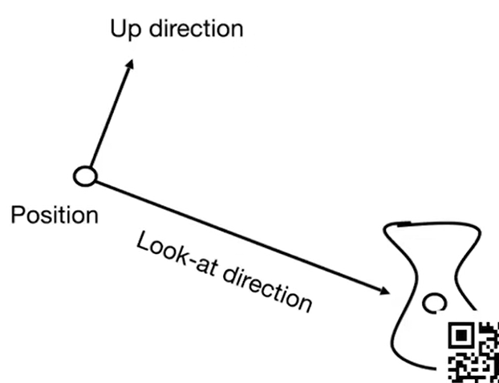
我们期望一个摄像机（view）能够有如上参数，这样方便计算，但是真实的camera view不会和我们期望的相同，所以我们需要对camera的上述三个向量做转换，使得camera的view参数达到预期。
view的变换
目的：通过旋转、平移缩放等操作的组合，调整相机使其处于指定状态。
- 平移：e平移到origin
- 旋转：g->-Z, t->Y, g\(\times\)t->X
- 缩放：此处不涉及缩放
平移
平移 \(\vec{e}\) 到原点：
需要计算：原点 = \(T_{view} \cdot \vec{e}\)
用齐次坐标表达：
\[ \left[ \begin{array}{c} 0\\ 0\\ 0\\ 1\\ \end{array} \right] =\left[ \begin{matrix} 1& 0& 0& ?\\ 0& 1& 0& ?\\ 0& 0& 1& ?\\ 0& 0& 0& 1\\ \end{matrix} \right] \left[ \begin{array}{c} x_e\\ y_e\\ z_e\\ 1\\ \end{array} \right] \]
解得：
\[ T_{view}=\left[ \begin{matrix} 1& 0& 0& -x_e\\ 0& 1& 0& -y_e\\ 0& 0& 1& -z_e\\ 0& 0& 0& 1\\ \end{matrix} \right] \]
旋转
将 \(\hat{g}\) 和 \(\hat{t}\) 旋转到-Z轴和Y轴，直接求出旋转矩阵 \(R\) 并不容易，但是由-Z轴和Y轴旋转到 \(\hat{g}\) 和 \(\hat{t}\) 就比较简单了，当我们得到 \(R^{-1}\) 后，进行逆运算，就能得到 \(R\)了，\(R=(R^{-1})^{T}\)。
\[ R_{view}^{-1}=\left[ \begin{matrix} x_{\hat{g}\times \hat{t}}& x_t& x_{-g}& 0\\ y_{\hat{g}\times \hat{t}}& y_t& y_{-g}& 0\\ z_{\hat{g}\times \hat{t}}& z_t& z_{-g}& 0\\ 0& 0& 0& 1\\ \end{matrix} \right] \]
\[ R_{view}^{}=\left[ \begin{matrix} x_{\hat{g}\times \hat{t}}& y_{\hat{g}\times \hat{t}}& z_{\hat{g}\times \hat{t}}& 0\\ x_t& y_t& y_{-g}& 0\\ x_{-g}& y_{-g}& z_{-g}& 0\\ 0& 0& 0& 1\\ \end{matrix} \right] \]
旋转 + 平移
通过对camera进行旋转和平移，使camera满足指定view旋转与平移结合的方式有两种：
- 先旋转后平移
- 先平移后旋转
根据常识可知，应该先平移再旋转。
因此有变换矩阵：
\[ M_{view} = R_{view} \cdot T_{view} \]
本文出自CaterpillarStudyGroup，转载请注明出处。
https://caterpillarstudygroup.github.io/GAMES101_mdbook/
Projection 投影变换
[39：00]目的：使物体处于坐标中心的\([-1, 1]^3\)这个立方体中。
投影通常是指3D->2D的映射，但在这里，投影后的结果仍需要保留投影前的深度信息，用于渲染这一步计算遮挡情况。因此是3D->3D的。
正交投影vs透视投影
-
视觉效果上的区别
正交投影:（左），用于工程制图
透视投影：（右），呈现出近大远小的效果，类似于人眼

-
数学上的区别:
正交投影: 认为相机位于无限远处认为相
透视投影: 机是近处的一个点
本文出自CaterpillarStudyGroup，转载请注明出处。
https://caterpillarstudygroup.github.io/GAMES101_mdbook/
正交投影
[43：00]
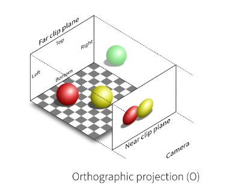
准备工作
把相机 view 变换为期望 view（转换到原点），方法是让相机参数乘以一个矩阵。
为了保持camera和object的相对位置不变，object也要同样乘以这样一个矩阵。
这样调整之后，object位于z轴负方向上的某个位置。
正交投影的主要过程
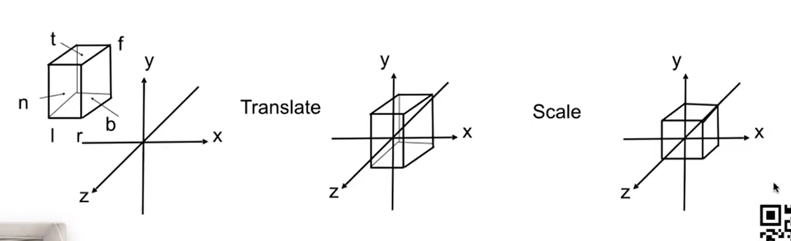
$$ M_{ortho} = M_{scale} \cdot M_{trans} $$
💡 PPT P21 [43:01]介绍了正交投影的一种简单理解的方式，让人能够直观地理解正交投影的结果，却也引入的歧义。让人误以为正交投影就是这么简单的过程。以至于后面讲正交投影的完整过程时听众会觉得confuse，为什么会有两个不一样的正交投影流程？因此在本文是中去掉了第一种理解方式。
正交投影中的平移

| 当前位置 | 期望位置 | |
|---|---|---|
| 左右 | [l,r] | [-(r-l)/2, (r-l)/2] |
| 上下 | [b,t] | [-(t-b)/2, (t-b)/2] |
| 远近 | [f,n] | [-(n-f)/2, (n-f)/2] |
📌补充： 由于投影的设定，l在坐标值上，小于r；b小于t，f小于n（因为朝向-Z轴）
正交投影的平移矩阵为：
\[ M_{trans}=\left[ \begin{matrix} 1& 0& 0& -\frac{r+l}{2}\\ 0& 1& 0& -\frac{t+b}{2}\\ 0& 0& 1& -\frac{n+f}{2}\\ 0& 0& 0& 1\\ \end{matrix} \right] \]
正交投影中的缩放

与平移同理。
正交投影的缩放矩阵为：
\[ M_{scale}=\left[ \begin{matrix} \frac{2}{r-l}& 0& 0& 0\\ 0& \frac{2}{t-b}& 0& 0\\ 0& 0& \frac{2}{n-f}& 0\\ 0& 0& 0& 1\\ \end{matrix} \right] \]
正交投影中的旋转
正交投影过程不涉及object的旋转，因此旋转矩阵\(M_{rotation}\)是单位阵。
此处变换顺序为：先平移再缩放无旋转，因此
$$ M = M_{scale} \dot M_{trans} $$
本文出自CaterpillarStudyGroup，转载请注明出处。
https://caterpillarstudygroup.github.io/GAMES101_mdbook/
透视投影
[53:10]
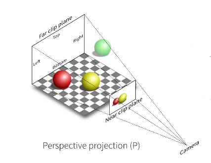
透视投影的主要过程
透视投影的过程是先将Frustum（截锥体）转换为Cuboid（长方体），然后再用上面的方法对长方体做正交投影：

💡 我的理解
- 在Frustum（截锥体）-> Cuboid（长方体）之前应该有一步平移的过程，让Frustum的中心轴与z轴重合。类似于正交投影中的第一步。因此真正的过程应该是这样的：
平移（正交投影的第一步） ===> Frustum（截锥体）-> Cuboid（长方体） ===> 缩放（正交投影的第二步）- 课程中用挤压来解决“Frustum（截锥体）-> Cuboid（长方体）”的过程，方便理解的同时却也引入的歧义。因为这里的Frustum是视锥体，跟几何锥体还是有区别的。这也是为什么挤压之后z会变。
要把Frustum转换为Cubuid是仿射变换的过程，主要方法仍是求出仿射变换的矩阵。
在正交投影中，是根据正交变换的过程，将仿射变换矩阵分解为S, R, T三个部分，依次计算出S， R, T再将它们合并。
在透视投影中，仍然不涉及旋转，但是平移和缩放的过程是揉合在一起的，难以拆分，因此采用选取特殊点的方式，直接求出投视投影的变换矩阵。
\(M_{persp\rightarrow ortho}\)
侧面分析
从侧面看，存在相似三角形（图中很容易看出）

通过相似三角形，可以得到：
\[ y'=\frac{n}{z}y\\ x'=\frac{n}{z}x \]
💡 这个公式成立的前提是frustum的中心轴与z轴重合，这也印证了前面提到的“frustum->cuboid之前应该先平移”。
我们的目的是将 \((x, y, z)\) 转换为 \((x', y', z)\)。
现在可以得到：
\[ \left( \begin{array}{c} x\\ y\\ z\\ 1\\ \end{array} \right) \Rightarrow \left( \begin{array}{c} nx/z\\ ny/z\\ unknown\\ 1\\ \end{array} \right) \]
为坐标乘以 \(z\)，得：
\[ \left( \begin{array}{c} x\\ y\\ z\\ 1\\ \end{array} \right) \Rightarrow \left( \begin{array}{c} nx/z\\ ny/z\\ unknown\\ 1\\ \end{array} \right) ==\left( \begin{array}{c} nx\\ ny\\ still,,unknown\\ z\\ \end{array} \right) \]
想要将 \(\left( \begin{array}{c} x\\ y\\ z\\ 1\\ \end{array} \right)\) 投影为 \(\left( \begin{array}{c} nx\\ ny\\ unknown\\ z\\ \end{array} \right) \)，需要求一个投影矩阵：
\[ M_{persp\rightarrow ortho}^{\left( 4\times 4 \right)}\left( \begin{array}{c} x\\ y\\ z\\ 1\\ \end{array} \right) =\left( \begin{array}{c} nx\\ ny\\ unknown\\ z\\ \end{array} \right) \]
我们已经知道一些数据了，所以能求出M的一些值（显然，由上式可得）：
\[ M_{persp\rightarrow ortho}^{\left( 4\times 4 \right)}=\left( \begin{matrix} n& 0& 0& 0\\ 0& n& 0& 0\\ ?& ?& ?& ?\\ 0& 0& 1& 0\\ \end{matrix} \right) \]
n面分析和f面分析
M已经被解决不少了，但还差一些，不过，我们还有一些坐标点不变的性质可以使用：
-
Frustum的n（近处）面，所有坐标是不变化的。
-
f面的Z轴坐标值，是不变化的；
-
Z轴穿过的中心点的坐标值，是不变化的。

n面，所有坐标点不变，那么取一个n面上随便一点，该点的Z轴坐标值为n，即：
\[ \left( \begin{array}{c} x\\ y\\ n\\ 1\\ \end{array} \right) \]
为坐标乘以n：
\[ \left( \begin{array}{c} nx\\ ny\\ n^2\\ n\\ \end{array} \right) \]
既然这一点在投影前后不会变化，我们可以列出下面的式子：
\[ \left( \begin{array}{c} nx\\ ny\\ n^2\\ n\\ \end{array} \right) =\left( \begin{matrix} n& 0& 0& 0\\ 0& n& 0& 0\\ ?& ?& ?& ?\\ 0& 0& 1& 0\\ \end{matrix} \right) \left( \begin{array}{c} x\\ y\\ n\\ 1\\ \end{array} \right) \]
上式其实只剩下下面这个式子要求：
\[ n^2=\left( ?, ?, ?, ? \right) \left( \begin{array}{c} x\\ y\\ n\\ 1\\ \end{array} \right) \]
具体来说，是这样的：
\[ n^2=\left( 0, 0, A, B \right) \left( \begin{array}{c} x\\ y\\ n\\ 1\\ \end{array} \right) \]
于是可以得到：
\[ An+B=n^2 \]
同理，在f面上，变换后点(0,0,f)不变，可以得到：
\[ Af+B=f^2 \]
联立上述AB方程，解得：
\[ A=n+f\\ B=-nf \]
所以我们推导出了透视投影的一个变换矩阵：
\[ M_{persp\rightarrow ortho}^{\left( 4\times 4 \right)}=\left( \begin{matrix} n& 0& 0& 0\\ 0& n& 0& 0\\ 0& 0& n+f& -nf\\ 0& 0& 1& 0\\ \end{matrix} \right) \]
透视投影矩阵
透视投影的最终的变换矩阵是 M = M（正交）M（透视）
为什么透视投影会z会后移
从数学上
定义z'为变换后的z坐标，那么z' = (n+f)-nf/z
\[ f = z' - z = (n+f) - nf/z -z \]
\[ zf = -z^2 + (n+f)z - nf \]
zf是一个开口向下的二次曲线。它与x轴的交点在z=n处和z=f处。当z位于(f, n)区间时，zf>0。
由于f<0且n<0，当z位于(f, n)区间时，z<0，因此f<0，即z'-z<0
z'<z，因此z会变远。
从直觉上
一开始会觉得有点奇怪，违反直觉。细想之后觉得是很合理。
因为透视投影要表现出近大远小的效果。近大不止是x轴和y轴的大，z轴上也会大。即同一个物体，如果放得近，它在z轴上会更大点。
空间上也是如此，透视前的空间，把它以z=0分成前后均匀的两半，近的那一半，在透视后必然要占更大的z轴范围，因此z会往后。
本文出自CaterpillarStudyGroup，转载请注明出处。
https://caterpillarstudygroup.github.io/GAMES101_mdbook/
根据Fov定义cubic、Frustum
📌补充： 定义一个视锥，只需要视角和宽高比即可，其他参数可以转换。
-
描述立方体的符号：l，r，u，d，f，n
-
描述屏幕的符号：

- 宽高比（Aspect ratio）
- width/height
- 视角（Field of view）

- 用符号描述屏幕和立方体的关系
把视角和宽高比转换为l、r、b、t

由图可得以下关系：
\[ \tan \frac{fovY}{2}=\frac{t}{|n|} \]
\[ aspect=\frac{r}{t} \]
本文出自CaterpillarStudyGroup，转载请注明出处。
https://caterpillarstudygroup.github.io/GAMES101_mdbook/
当观测结束后，所有物体到了[-1, 1]的三次方这个立方体中，那么，下一步是什么？将其放在屏幕上。
[14:40] 什么是光栅化
🔎
pixel：像素，picture element，一个小方块，且方块内颜色不变
Raster:屏幕，由像素组成二维数组
Rasterize: 光栅化
Triangle Mesh: 三角形面片
光栅化，即把对象（object）画在屏幕（raster）上。对象是指cubic中的内容，常用三角形面片表示对象的表面。屏幕，由像素（pixel）组成的2D数组。数组的大小代码的屏幕的分辨率。
具体过程可以描述为：找到对象表面在cubic中的位置，根据cubic与raster的关系，确定它在raster上应出现的位置。在raster的正确的位置上渲染对象。
将观测的物体在屏幕上显示，就是光栅化。
定义屏幕空间
在屏幕上的坐标系

- 原点在左下角，向右为x正方向，向上为y正方向
- 每个像素的坐标是整数，范围为[0, width) [0, height)
- 像素(x， y)的中心位置：(x+0.5, y+0.5)
❗注意区分坐标与位置的不同含义
📌课程中关于显示器的部分被我跳过了，因为我认为与算法相关度不大。
光栅化的最基本的流程
Step 1: 选取cubic中物体的表面三角形
3D空间中的物体，通常使用三角形面片来描述物体的表面。所谓把物体画到屏幕上，实际上就是把这些三角形面片画到屏幕上。
为什么用三角形描述物体表面？
-
三角形是最基本的多边形（其他多边形可以由三角形拼成）
-
一个三角形一定在一个平面上
-
三角形关于“内”、“外”的定义是明确的
-
给定三角形三个顶点的属性，其内部任意点的属性可以通过插值得出
Step 2: 根据三角形在cubic内的坐标计算出它在屏幕上的位置（浮点数）
坐标系的变换，只需要计算出正确的变换矩阵就可以实现。

\[ \begin{bmatrix} x' \\ y' \\ 1 \\ 1 \\ \end{bmatrix} = \begin{bmatrix} S & T \\ 0 & 1 \\ \end{bmatrix}\begin{bmatrix} x \\ y \\ z \\ 1 \end{bmatrix} \]
其中S是指缩放，T是指平移，这里面不涉及到旋转。
对变换做以下假设：
- 忽略Z轴
- 将xy平面：[-1,1]^2 转换到 [0, width] X [0, height]
- 不涉及旋转
选取部分特殊点，代入计算，即可得出变换矩阵为：
\[ M_{viewport}=\left( \begin{matrix} \frac{width}{2}& 0& 0& \frac{width}{2}\\ 0& \frac{height}{2}& 0& \frac{height}{2}\\ 0& 0& 1& 0\\ 0& 0& 0& 1\\ \end{matrix} \right) \]
Step 3: 把三角形画在屏幕上
根据上面的转换公式，可以得出三角形上每个点对应在屏幕上的位置（浮点数）。但屏幕上像素的下标是整数。如下图：

怎么确定每个像素格子是否需要被渲染成三角形的颜色？
最简单的方法是：判断屏幕空间中每个像素的中心是否在三角形的内部。

方法一：采样方法
依次遍历每个像素(x, y)：
取像素中心的位置(x+0.5, y+0.5)
判断像素中心是否在三角形内部（叉乘）
如果在内：
渲染
如果在外：
渲染
如果在三角形边上：
自己决定是否渲染
🔎判断三角形的内和外：
https://caterpillarstudygroup.github.io/GAMES101_mdbook/Dependency/Vector.html#%E5%9C%A8%E5%9B%BE%E5%BD%A2%E5%AD%A6%E4%B8%AD%E7%9A%84%E4%BD%9C%E7%94%
缺点：必须要依次check每个pixel
方法二：Bounding Box [56:00]
对整个屏幕遍历，然后判断每个像素的中心是否在三角形内，这太傻了。
正确的做法是，只遍历包围三角形的最小矩阵，称之为三角形的包围盒。

局限性：
对于这种情况仍有较大的计算量。

方法三：Incremental [56:55]
一种启发式的方法，比较容易想到，也懒得记了。
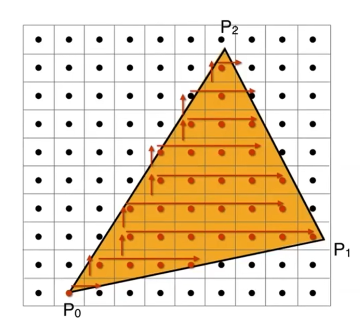
光栅化的结果
[1:02:38], [1:03:01]

当按照像素中心是否在三角形内的采样方式采样后，得到了不理想的结果。
产生了锯齿！（jaggies）
消除锯齿是图像学致力于解决的重要问题。
抗锯齿，也叫反走样。
本文出自CaterpillarStudyGroup，转载请注明出处。
https://caterpillarstudygroup.github.io/GAMES101_mdbook/
消除锯齿是图像学致力于解决的重要问题。
抗锯齿，也叫反走样。
反走样（Antialiasing）的定性分析与解决方法
采样理论
Photo是对image的采样
video是在时间维度的采样[07:33]
它们都是将连续的信息离散化。
采样会产生 Artifact，例如：
- 锯齿[09:17]
- 摩尔纹[09:30]
- 车轮效应
采样Artifact的本质原因：信号变化太快，采样速度跟不上
反走样方法
[14:05]
先对object模糊化，然后再采样
模糊化的过程使用滤波实现。
采样后，中心点红色，边界点粉红色

✅ 先采样再模糊化不能起到反走样的效果
遗留问题
- 为什么先采样再模糊化不能起到反走样的效果？
- 为什么采样速度跟不上信号变化的速度会产生走样？
本文出自CaterpillarStudyGroup，转载请注明出处。
https://caterpillarstudygroup.github.io/GAMES101_mdbook/
上节提到，走样的本质原因是信号的变化速度太快，采样的速度跟不上。
变化速度与采样速度，都是与频率相关的概念，因此本节从频域的角度来分析走样问题。
频域的相关概念
余弦波
\(\cos 2\pi fx\)，其中f代表频率。f越大，则信号变化越快。
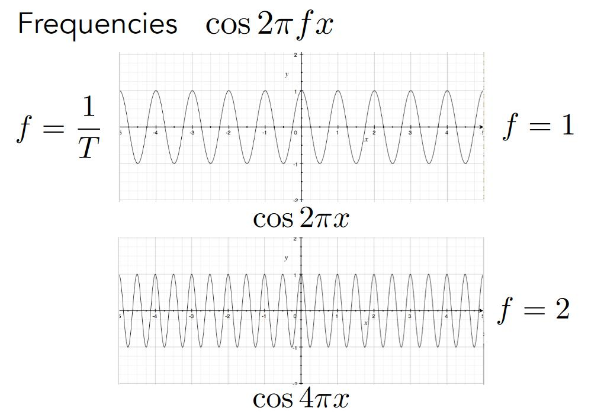
傅里叶级数展开：
任何一个周期函数可以写成：不同频率的正/余弦函数的线性组合，以及一个常数。

❓ 非周期函数会怎么样呢？
傅里叶变换（可逆）
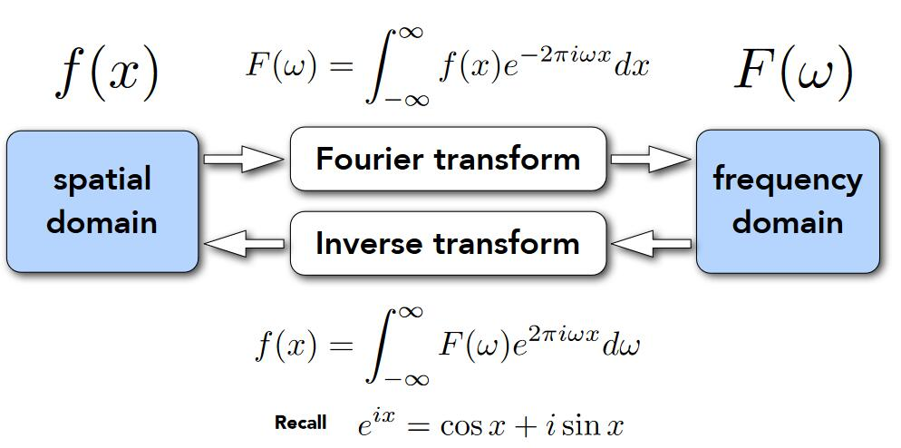
傅里叶变换是指把函数转为它在频域上级数展开的形式。
函数与采样的关系
函数的频率
基于傅里叶变换，可以把函数分解为不同的频率的函数[24：51]
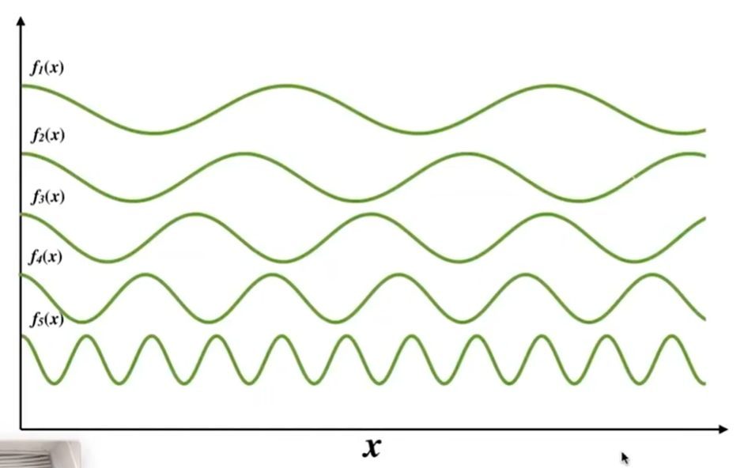
频率高，即代表信号变化快。也就是说，一个函数是由各种不同频率的信号混合而成的。
采样的频率
[24:51]
以相同采样频率对以上函数采样
通过采样点能恢复出低频信息，不能恢复出高频信息。
[29:00]
走样的本质原因的数学描述：两个不同频率（蓝黑）的信号，在某采样频率下，得到了完全相同的采样点，因此无法区分。

图像中的频率成分[29：32]
对图像信息做傅里叶变换，就可以把图像（时域信息）转成频域信息[31：01]：
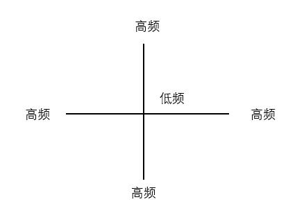
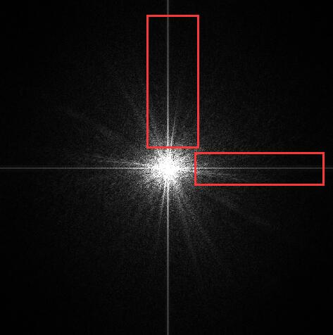
图像的频域图具有以下特点：
- 图中点越亮代表此处频率的能量越高
- 图像中的信息大部分为低频信息（自然生成的图像都有此特点）
- 由于强行把图像周期化，红色框中的亮线是图像跨越边界时产生的高频信息，这些高频信息可以忽略。
高通 filter [34：21]
滤波：即把某些信息（即特定的频率分量）去掉。
保留频域图中的高频信息，再通过逆傅里叶变换把频域图恢复成原始图像。发现图像只剩下了原图的轮廓部分。
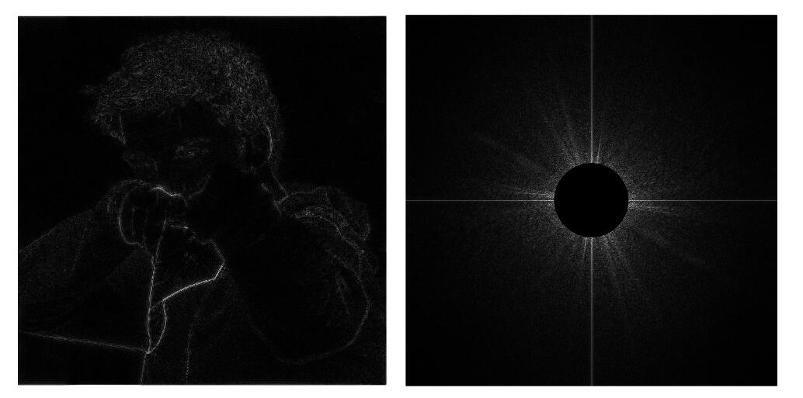
解释：
保留的高频信息对应于图像边界。因为图像边缘为信号的剧变处。
低通 filter [36：19]
同理，只保留图像的低频信息，图像会变模糊，失去边界
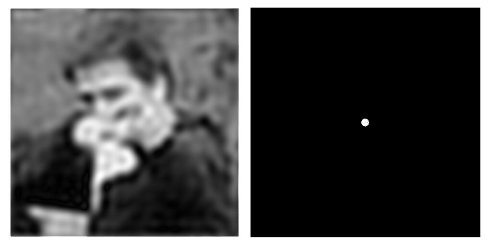
本文出自CaterpillarStudyGroup，转载请注明出处。
https://caterpillarstudygroup.github.io/GAMES101_mdbook/
滤波 VS 卷积 VS 平均
卷积 VS 平均
结论1： 卷积可以看作是个局部区域的加权平均， 卷积kernel即局部加权
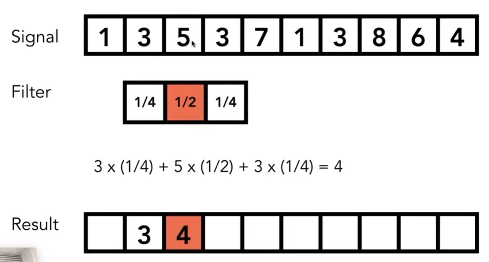
卷积 VS 滤波
🔎 卷积定理：
时域卷积 = 频域乘积
时域乘积 = 频域卷积
图像的卷积操作是从信号的卷积运算中借鉴过来的概念。虽然不完全相同，其本质是一样的。
图像的卷积操作可以看作中对图像的时域信息做卷积运算，时域信息的卷积运算又可以转化为频域上的乘积运算。前面所讲的滤波操作实际上就是用频域上的乘积运算来实现的。因此图像的时域卷积操作与频域滤波操作本质上是一致的。
例子一：以低通滤波为例
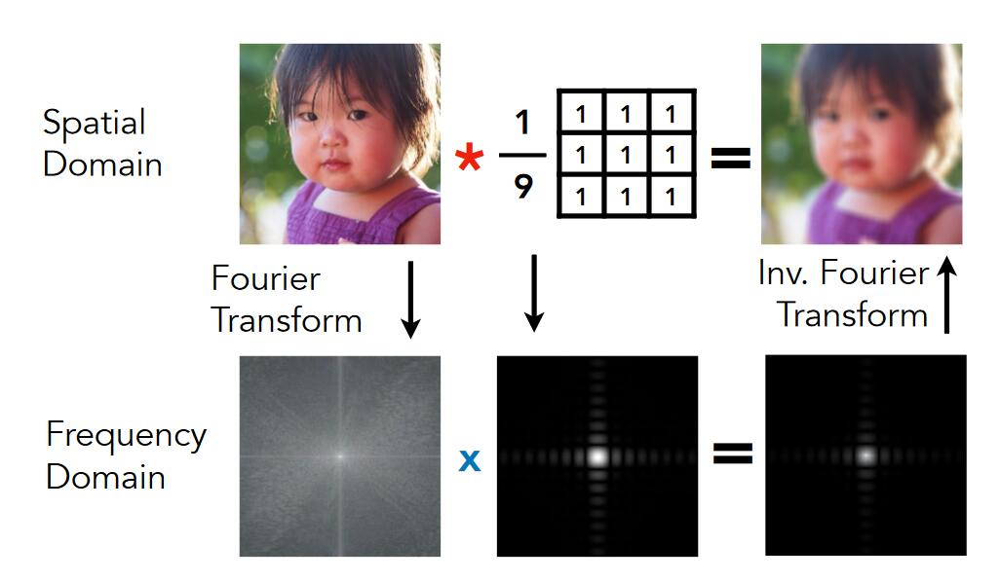
例子二：
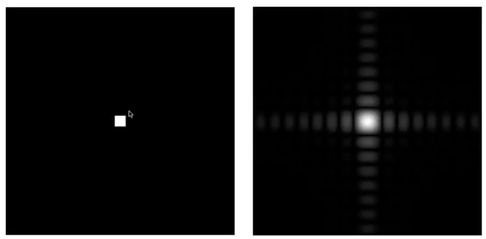
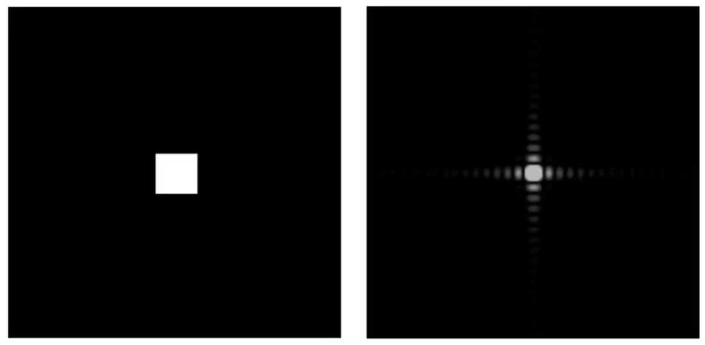
❓ 这个例子想说明什么？
结论2：时域卷积 = 频域滤波， 卷积kernel = 频域filter
结论
时域卷积 = 频域滤波 = 局部加权平均
卷积kernel = 频域filter = 局部加权
采样 VS 频域卷积
例子

解释：
a：时域信号
b：a对应的频域信号
c：对a进行采样的周期采样函数
d：采样函数的频域表示
e：对a进行采样的结果，即a与c乘积的结果
f：采样结果的频域表示。由于时域乘积=频域卷积，这也是b与d卷积的结果
分析
采样是通过时域上的乘积操作实现的。
时域乘积 = 频域卷积
\[ f_1\left( x \right) \times f_2\left( x \right) \Longleftrightarrow F_1\left( \omega \right) \otimes F_2\left( \omega \right) \]
💡 \(f_1\left( x \right)\) 是信号（a）， \(f_2\left( x \right)\)是采样信号（c）， \(F_1\left( \omega \right)\) 是a的频谱（b） \(F_2\left( \omega \right)\) 是采样信号的频谱
结论：采样就是把原信号的频谱以特定周期呈现。
采样周期长 \(\Longrightarrow \)
\(\Longrightarrow \) \(F_2\left( \omega \right)\) 的频谱间隔小
\(\Longrightarrow \) (b)以更密的形式重复
\(\Longrightarrow \) (f)的频谱出现混叠[55:59]
\(\Longrightarrow \) 时域上表现为走样
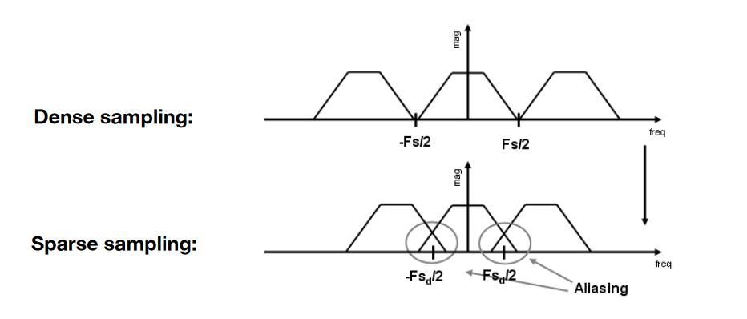
本文出自CaterpillarStudyGroup，转载请注明出处。
https://caterpillarstudygroup.github.io/GAMES101_mdbook/
反走样
提升分辨率/采样率
分辨率上升 \(\Longrightarrow \) 像素格子小 \(\Longrightarrow \) 像素采样率上升 \(\Longrightarrow \) （b）间隔大 \(\Longrightarrow \) 混叠少 \(\Longrightarrow \) 减轻走样现象
缺点：受制于物理限制
反走样算法 [59:49]
在物理条件不变的情况下解决走样问题
原理：把可能混叠的部分切掉

具体方法：
- 使三角形变模糊，对于三角色形上任意一个像素点：
- 原来是根据像素点中心是否在三角形内来判断着色。
- 现在的做法是，判断整个像素点有多少面积在三角形内来计算着色（卷积）。

- 正常采样
局限性
面积难以计算
MSAA [1：05：17]
Multi Sample Anti-aliasing算法，反走样算法的近似算法
具体方法
- Supersampling：一个象素内部划分成多个子（sub）像素 [1:05:17]
- 判断每个子像素是否在三角形内 [1:06:59]

📌 实际在这一步中不会这样均匀的划分，而是采用更合理的方法，在达到效果的同时尽量少地提升计算量。
3. 对判断结果求平均值 [1:07:22], [1:08:55]

局限性
缺点：增加计算量
❗注意: Supersampling 与提升分辨率的区别： 本算法并没有实质性地增加像素点
FXAA
Fast Approxiamte Anti-aliasing算法
- 用常规方法得到带锯齿图像
- 通过图像匹配的方法找到边界
- 把边界换成没有锯齿的边界
优点：速度快， 与采样无关
TAA [1：15：10]
Temporal Sample Anti-aliasing算法
🔎 Temporal： 时间上的
大概意思是，边界上的点，有时显示在上一帧，有时显示在这一帧
本文出自CaterpillarStudyGroup，转载请注明出处。
https://caterpillarstudygroup.github.io/GAMES101_mdbook/
采样除了会带来走样问题，还有其它问题。
Super Resolution 超分辨率
问题描述： 低分辨率图拉大成高分辨率出现的锯齿问题
解决方法：DLSS，即Deep Learning Super Sampling
本文出自CaterpillarStudyGroup，转载请注明出处。
https://caterpillarstudygroup.github.io/GAMES101_mdbook/
背景
有多个物体，每个物体都有多个三角形，因此要处理摭挡问题。
画家算法

原理
由远及近的在画布上添加新物体，新添加的物体将已有的物体覆盖
主要步骤
- 由远即近排序 O(nlogn)
- 依次光栅化
局限性[09:26]：
- 难以决定被画对象的深度，深度估计错了，排序就错了，画出来就不对
- 无法处理深度嵌套的场景

Z-Buffer 算法
名称：depth buffer， Z buffer，或深度缓存
📌 可以解决画家算法无法决定深度的局限性
原理
不基于三角形的深度，而是基于像素的深度
预处理
[10:40]由于MVP之后，约定摄像机在坐标原点，物体在视角的z轴负方向，因此物体的z都是负的。为了便于计算，物体上每个点的Z坐标都取其绝对值（深度）。
因此：
- Z(depth) > 0
- Z(depth) 小-->近， Z 大-->远
- 深度是一个物体距离摄像机的Z轴距离的绝对值。
具体步骤
算法过程中维护两个数据:
- frame buffer：存每个像素点当前绘制的像素值。当算法完成时，这里面的数据就是最终输出结果。
- depth buffer：存每个像素点对应的物体上的最小的depth（最近）。当发现在这个像素点上有更近的物体时更新。
两个buffer都是逐像素的，因此将buffer数据可视化[14:38]。


👆 图中，A点是距离视点（摄像机）较近的点，所以颜色比较黑，B点是距离视点较远的点，所以颜色比较白。距离视点近的像素点，颜色就比较黑，反之比较白，这就是depth/Z buffer。
伪代码：
Initialize depth buffer to ∞
during rasterization：
for triangle in triangles:
for (x, y, z) in triangle:
if z < zbuffer[x, y]:
framebuffer[x,y] = rgb
zbuffer[x,y] = z
else:
pass
- depth buffer 所有像素初始化为无限远
- 对每个三角形做光栅化，每次绘制三角形时，计算当前像素在三角形上的深度Z 如果Z小于depth buffer上对应点的值，就绘制该点，且更新depth buffer。
📌 深度缓存发生在每个像素内。
算法特点
- 时间复杂为O(n)。
✅
问：为什么能在O(n)复杂度内解决排序问题？
答：这里没有排序。只是找个最值。
- 与三角形的绘制顺序无关，因此适合GPU优化
- 可以与MSAA算法兼容
💡 画家算法是global方法，z-buffer是local方法（贪心）
global要同时考虑所有数据，因此快。local只考虑小范围数据，因此快。
global通常能得到全局最优，但如果只是要一个尽量好（而非最优）的解，考虑到效率、规模的问题，更适合用local。local之间越独立结果越好。
如果global能够完成分解为local，那么毫无疑问选择local，减小问题规模同时能得到最优解。
当前问题属于这一类，因为像素之间是独立的。
local除了能减小问题规模，还可以并行化计算。
本文出自CaterpillarStudyGroup，转载请注明出处。
https://caterpillarstudygroup.github.io/GAMES101_mdbook/
Shading 着色
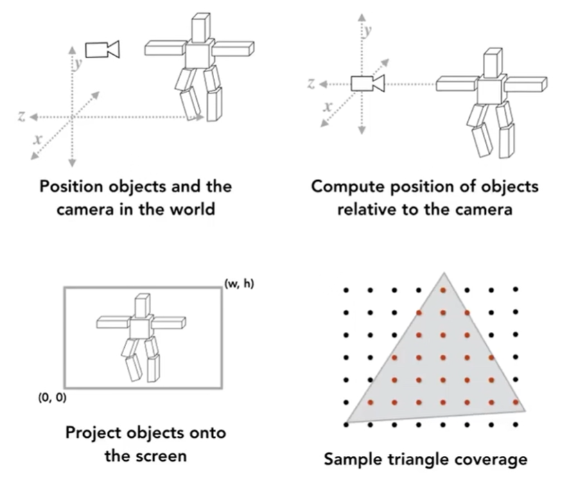
👆 把前面的步骤串起来，是这样子的过程
经过前面这些步骤后，能这得到这样的结果：

👆 （左）不考虑着色的效果；（右）期望达到的效果。
纯色立方体的每个面每个时刻呈现的颜色有变化。使整体效果更真实。
📌 为什么纯色物体的不同时刻和不同位置，其颜色看不去会不同？
答：颜色是差别是物体的材质与光源作用的结果。同一时刻，不同位置上的像素点，与光源的关系不同，呈现的颜色就会不同。不同时刻，光源发生了变化，同一像素点与光源的关系也变了，导致呈现出的颜色的变化。
根据物体的材质，以及物体与光源的关系，对物体的颜色加以调整，这个过程就是着色。
即：The process of applying a material to an object.
本课程中不包含给object添加投影的过程。
本文出自CaterpillarStudyGroup，转载请注明出处。
https://caterpillarstudygroup.github.io/GAMES101_mdbook/
Blinn-Phong 反射模型
这是一个简单基础的模型，属于经验模型，并不完全符合物理。
它将光分成了三种成分，分别针对这三种成分的光，模拟光源对物体的作用。

- 高光(Specular highlights): 光线反射到镜面反射附近
- 漫反射(Diffuse reflection): 光线被反射到各个方向上
- 环境光(Ambient lighting): 假设任何一个点会接收到来自环境的常量的光
💡 问题简化抽象，可以快速得到近似的结果。
就像五行八卦就是对现实世界的抽象。
优点是：简化理解。
缺点是：不一定完全符合真实，用应用的局限性
定义

- shading point：当前要计算着色的点，位于物体表面。物体在shading point处的属性包含color, shinness。
- （\(\hat{n}\)）Surface normal：假设点附近极小范围内是一个平面，n为平面指向外的法向量
- （\(\hat{v}\)）Viewer direction：观测方向
- （\(\hat{l}\)）Light direction：光源方向，与光照向point的方向相反
📌 \(\hat{l}\)如何计算？
光源的位置减去shading point的位置，得到向量，然后求出单位长度\(\hat{l}\)
三种成分
漫反射
[47:35]
漫反射的特点
- 打到 point 上的光线被均匀地反射出去（与观测点v没有关系）

- l 与 n 的夹角决定了 point 接收到的光线的强度(Lambert's cosine law)

👆 假设光线是离散的，可以看出，当表面倾斜时，它接收到的光线会变少。理解为接收到的光线的强度变少。
- [54:48] 圆心是点光源，向外辐射能量。根据能量守恒定理（不考虑传播损耗），每个圆上的能量之和不变，因此某点处的能量与它到光源的距离平方是反比。

✅如果考虑三维空间，则应该是距离的立方。
漫反射项公式
通过以上分析，定义漫反射的能量公式为：
\[ L_d=k_d\left( I/r^2 \right) \max \left( 0,\boldsymbol{n}\cdot \boldsymbol{l} \right) \]
- \(L_d\)： shading point接收到的漫反射能量
- \(k_d\)： shading point对光的吸收率 (例如，不同的颜色对光的吸收能力不同)
- \(\left( I/r^2 \right)\)： 有多少能量到达了point
- \(\max \left( 0,\boldsymbol{n}\cdot \boldsymbol{l} \right) \)： 从正面照射的光，漫反射才有意义 （非正面射入，\(\boldsymbol{n}\cdot \boldsymbol{l}\)的值小于零）
- \(\boldsymbol{n}\cdot \boldsymbol{l}\)： 表示有多少能量被point接收
- 漫反射与观察者方向无关，因此公式中没有v的体现。
漫反射项的效果

高光项
高光的特点

R 为物体镜面反射的方向，当 v 和 R 接近时，会看到高光。
\(h=\frac{v+l}{||v+l||}\) 代表了 v+l 的方向， h 称为半程向量 half vector。 [08:25] 当v和R接近时，v+l 的方向(h)与n接近:
💡 为什么用\(n\cdot h\)代替\(v\cdot R\)？
因为\(n\cdot h\)更容易计算
高光项的公式
通过以上分析，定义高光项的能量公式为：
\[ L_s=k_s\left( I/r^2 \right) \max \left( 0, \cos \alpha \right) =k_s\left( I/r^2 \right) \max \left( 0, n\cdot h \right) ^p \]
- \(k_s\) 吸收率，通常认为高光是白色，也就是全吸收
- \(\left( I/r^2 \right)\) 表示有多少能量到达了point
- \(\max \left( 0, n\cdot l \right) ^p\) 表示n和h的接近程度
- \(L_s\) 同样应该考虑有多少能量被接收，但Blinn Phong模型将这个因素简化了
💡 公式中为什么会有指数p？
在保证函数趋势不变的同时，让高光更集中，通常取[100, 200]

高光项的效果

👆 漫反射项 + 高光项
Ks变大，高光变亮。p变大，高光范围变小。
环境光照项
Blinn Phong模型假设所有 point 接收到来自环境光的强度相同，且为常数:
\[ L_a=k_aI_a \]
与\(l\)和\(v\)无关
模型总述

\[ L=L_a+L_d+L_s=k_aI_a+k_d\left( I/r^2 \right) \max \left( 0,n\cdot l \right) +k_s\left( I/r^2 \right) \max \left( 0,n\cdot h \right) ^p \]
💡 为什么不考虑point到v的距离对能量的影响？？
这部分比较复杂,Blinn-phong模型没有考虑这个问题
💡 解决复杂问题的几个方法：
- 把问题分解为子问题，降低复杂度
- 把问题从应用场景、难点等角度划分，每一部分针对其特点解决
- 问题近似、简化
本文出自CaterpillarStudyGroup，转载请注明出处。
https://caterpillarstudygroup.github.io/GAMES101_mdbook/
着色频率
BlinnPhong模型描述了单点如何着色。
着色频度描述如果对所有点着色。即以什么样的策略对每个点运用BlinnPhong。或者说，是对哪些点应用Blinn Phong
[20:50]
对于同一个几何模型，不同的着色频率会产生不同的效果：
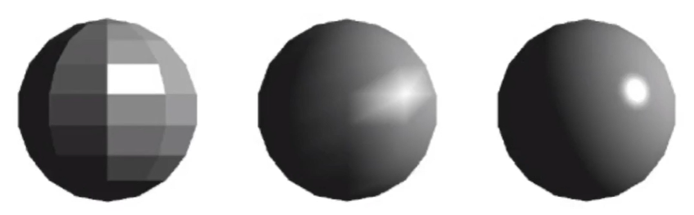
以下是几种不同的着色频率（着色策略）：
着色应用于平面（Flat Shading）
着色应用于一个平面上。一个平面只做一次shading，整个平面都用这个shading的结果。
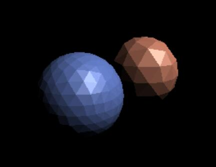
着色应用于顶点（Gouraud Shading）
着色应用三角形面片的顶点上，每个顶点先计算法向再计算着色，三角形内通过插值计算出着色
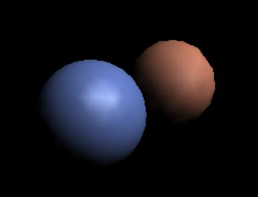
着色应用于像素（Phong Shading）
着色应用于像素，每个像素都计算法向与着色
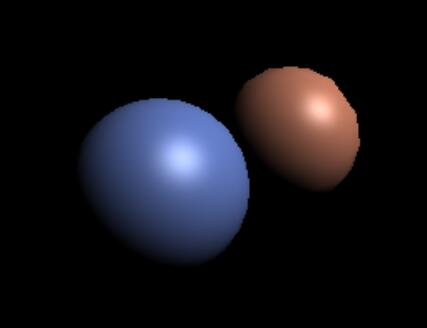
比较
不同着色频率和着色几何体的效果比较：
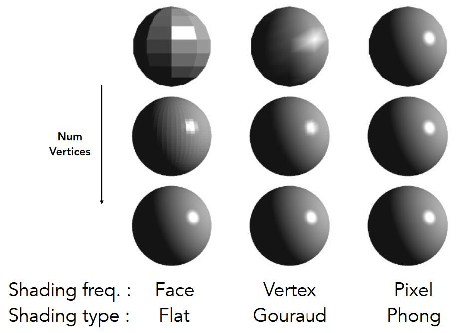
从上往下，几何形体本身越来越细腻光滑。
结论：
- 当几何足够复杂时，可以使用相对简单的着色频率。
- 当几何简单时，Phong Shading计算量大。当几何足够复杂时，例如顶点数多于像素数时，Flat Shading的计算量更大。
本文出自CaterpillarStudyGroup，转载请注明出处。
https://caterpillarstudygroup.github.io/GAMES101_mdbook/
计算一个点的法向量
方法一：利用几何特征
例如，已知object是个球体。可直接球出球表面某点的n（法向量）
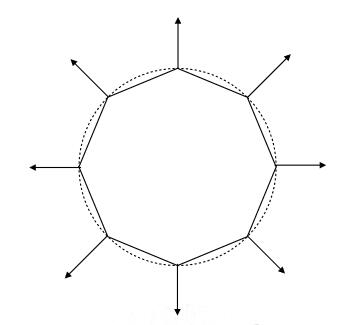
方法二：利用三角形面片
[30:08]
\[ N_v=\frac{\sum{N_i}}{||\sum{N_i}||} \]
相邻的三角形的n的平均或加权平均
📌 一个点可做多个三角形的顶点，将这些三角形（面）的法向量求均值，可简单的看做是这个点的法向量
如果考虑加权平均，则把三角形的面积做为权重。
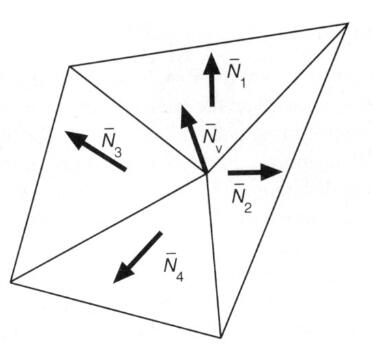
计算一个像素的法线
先求出顶点的法线，再利用重心坐标做插值。
[31:29]
本文出自CaterpillarStudyGroup，转载请注明出处。
https://caterpillarstudygroup.github.io/GAMES101_mdbook/
Real-time Rendering Pipeline
实时渲染管线
📌 一个场景，最后到一张图，中间经历了什么过程，这个过程就是管线（pipeline），即一系列不同的操作。
[35：24]
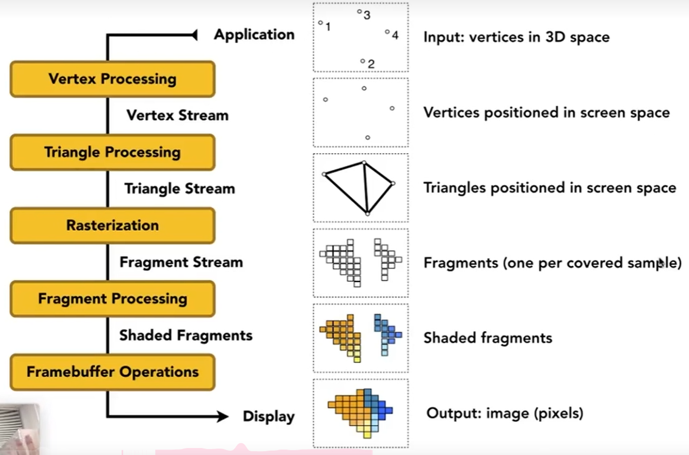
- MVP
👆 MVP是图中前三步。最后一步不是。
MVP发生在图中的Vertex Processing。
❓ 问：MVP的目标是把3D三角形投影到平面上。为什么这里只有点？
答：因为MVP这一步不改变点的连接关系。所以不需要对边做投影。投影之后提取原来的边的关系就可以。
- Sampling Triangle Coverage

对像素采样判断是否在三角形内，这一步发生在Raserization。
- 用z-buff判定可见性
这一步发生在Fragment Processing
- Shading

基于顶点的着色发生在Vertex Processing。
基于像素的着色发生在Fragment Processing。
Shader Programs
基于OpenGL的着色编程是工程问题，跳过
本文出自CaterpillarStudyGroup，转载请注明出处。
https://caterpillarstudygroup.github.io/GAMES101_mdbook/
漫反射公式的拓展
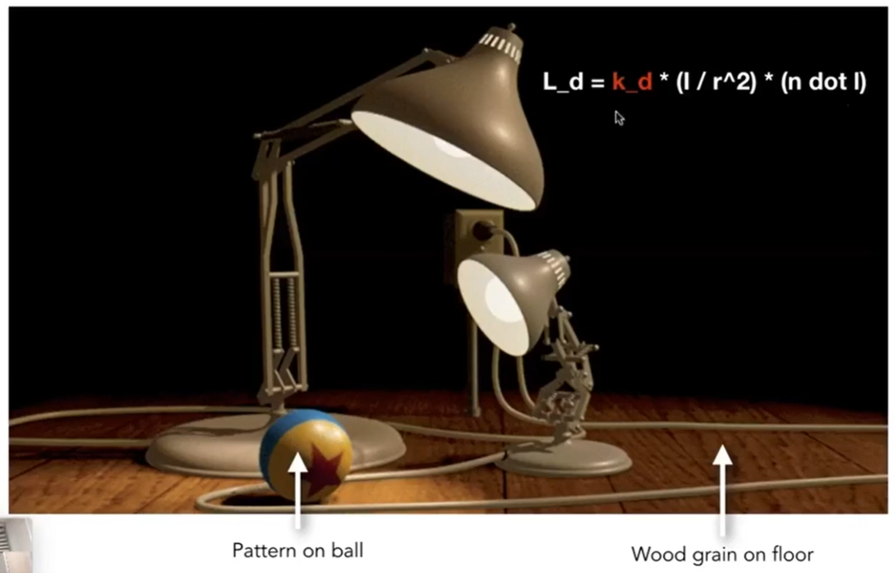
[55：59]图上所有点处于相同的一光照环境下，因此共用同一个着色模型。这是Blinn-Phong模型中计算漫反射项的公式：
\[ L_d=k_d\left( I/r^2 \right) \left( n\cdot l \right) \]
但每个点上有不同的颜色，这些不同的颜色，对应公式中的\(k_d\)部分。\(k_d\)就是每个点的不同的属性。
✅ \(k_d\)可以定义每个点的不同的属性。颜色纹理是其中一种属性。
纹理 Texture
3D物体的表面是2D的。
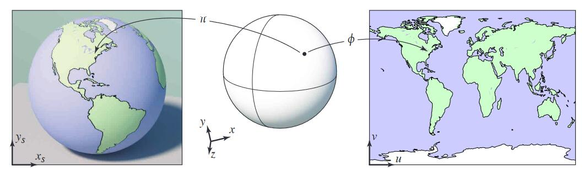
纹理：可以看作是一张有弹性、可拉伸的2D图。3D表面与2D图存在一一对应的关系。
纹理映射：是把2D纹理图贴在的物体表面的过程
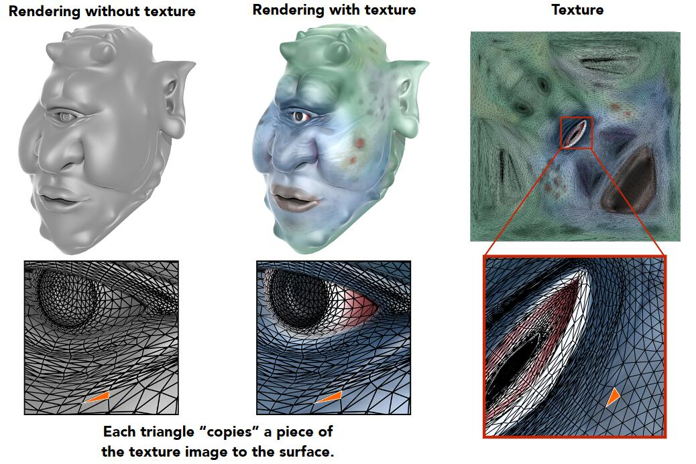
映射关系：物体表面三角形面片上的顶点（3D坐标），与纹理图上的点（2D坐标）的对应关系。这个映射关系通常由美工生成或者由程序自动化生成。此处假设映射关系是已知的。
✅ 如何自动生成纹理映射关系是其中一个研究方向。
纹理坐标：纹理图上的点的坐标，用符号(u, v)表示，u和v的范围都是[0, 1]。不管纹理图实际上有多大，形状是否为正方形。
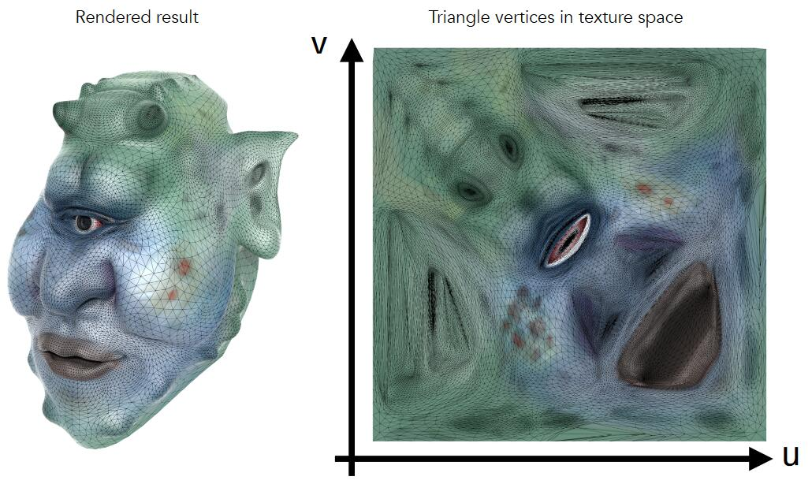
✅ 如何生成可以首尾连接的纹理是其中一个研究方向
插值：映射关系只包含三角形顶点对应的(u，v)，三角形内部点的(u，v)通过插值得到
本文出自CaterpillarStudyGroup，转载请注明出处。
https://caterpillarstudygroup.github.io/GAMES101_mdbook/
插值
为什么需要计算三角形内插值？
答：很多特殊值的计算都是只计算顶点，而内部点的值通过插值可以得到平滑的结果。
插值可以用于哪些数据？
答：纹理坐标、颜色、法向量等
三角形内的插值通常使用重心坐标。
重心坐标 Barycentric Coordinates
什么是重心坐标
重心坐标是定义在一个三角形上的坐标系。具有以下特点：
- 重心坐标不是指某个点的坐标值，而是指一个坐标系。与三角形的重心也没多大关系。
- 重心坐标定义在一个特定的三角形上。如果换一个坐标系，那么就会得到另一套坐标系。
- 用这套坐标系可以描述与三角形同平面的所有的点
- 如果某个点在三角形内部，那么它在这个重心坐标系上的表达会满足某些特点。
重心坐标的原理
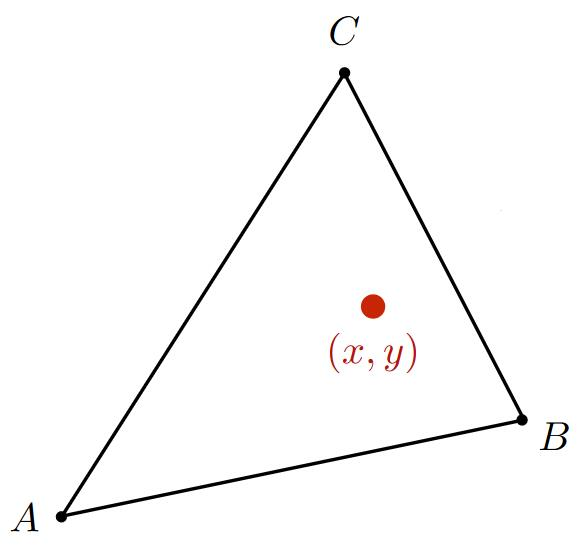
假设三角形的三个顶点分别是 A、B、C，则三角形所在平面上的任意一点可描述为A、B、C的线性组合，即：
\[ \left( x,y \right) =\alpha A+\beta B+\gamma C \]
且
$$ \alpha + \beta + \gamma = 1 $$
在这里，\((\alpha, \beta, \gamma)\)就是点(x, y)在这个三角形重心坐标系下的坐标，简称为重心坐标。
如果这个点在三角形内，还需要满足：\(\alpha +\beta +\gamma =1\) , \(\alpha \geqslant 0, \beta \geqslant 0,\gamma \geqslant 0\)
特殊点的重心坐标
- 顶点的重心坐标
\[ A=\left( 1,0,0 \right) , B=\left( 0,1,0 \right) , C=\left( 0,0,1 \right) \]
- 三角形重心的重心坐标
以2D为例，任意点(x,y)的重心坐标，就是顶点对面的三角形的面积之比，计算公式为：
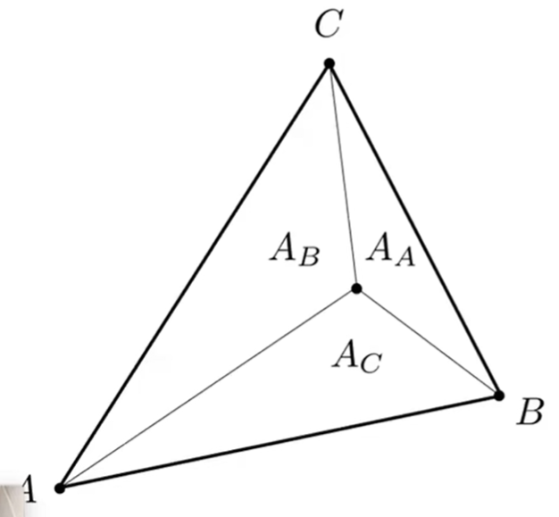
$$ \alpha = \frac{A_A}{A_A + A_B + A_C} \\ \beta = \frac{A_B}{A_A + A_B + A_C} \\ \gamma = \frac{A_C}{A_A + A_B + A_C} $$
因此，重心点的重心坐标为：
\[ 重心 = \left( \frac{1}{3},\frac{1}{3},\frac{1}{3} \right) \]
- 任意点的重心坐标
\[ \alpha =\frac{-\left( x-x_B \right) \left( y_C-y_B \right) +\left( y-y_B \right) \left( x_C-x_B \right)}{-\left( x_A-x_B \right) \left( y_C-y_B \right) +\left( y_A-y_B \right) \left( x_C-x_B \right)} \]
\[ \beta =\frac{-\left( x-x_C \right) \left( y_A-y_C \right) +\left( y-y_C \right) \left( x_A-x_C \right)}{-\left( x_B-x_C \right) \left( y_A-y_C \right) +\left( y_B-y_C \right) \left( x_A-x_C \right)} \]
\[ \gamma =1-\alpha -\beta \]
利用重心坐标做插值
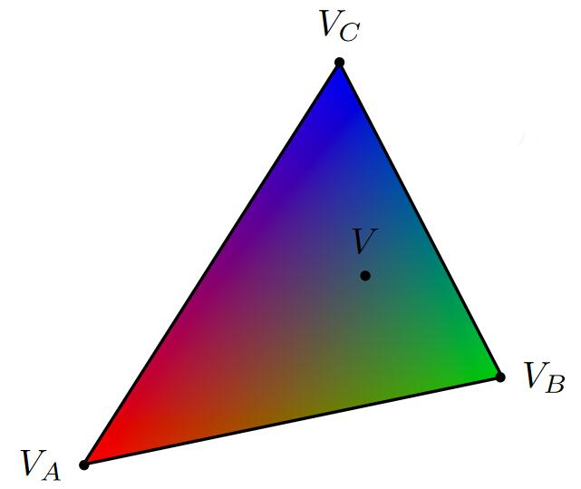
V是三角形内的一个点，根据V的坐标求出其重心坐标为\(\left( \alpha , \beta , \gamma \right) \)
\(V_A, V_B, V_C\)分别是三角形顶点上的属性值，
那么，P点处的属性值为：
\[ V_P=\alpha V_A+\beta V_B+\gamma V_C \]
优点：计算方便
局限性：空间三角形在平面上投影以后，同一个点在投影前后的重心坐标会改变，因此，插值所使用的重心坐标必须是投影前的重心坐标
本文出自CaterpillarStudyGroup，转载请注明出处。
https://caterpillarstudygroup.github.io/GAMES101_mdbook/
纹理映射
目的：把纹理应用到渲染中，使屏幕上的点p=(x,y)呈现出颜色
- 找出p在投影前的坐标p'=(x,y,z)
- 计算p'的(u,v)，如果p'不是顶点，则需要用到上一节的插值。
- 从texture中取出(u,v)点的值pv
- 设置p的值为(u,v)点的值为pv
💡 pv值对应漫反射项公式中的kd，高光项中的ks通常设置为白色。视频中没有说环境光照项中的ka怎么定义，但肯定是跟pv无关的，因为pv是每个点都不同的。
本文出自CaterpillarStudyGroup，转载请注明出处。
https://caterpillarstudygroup.github.io/GAMES101_mdbook/
问题描述
Texture Map 是256X256的，而要投影的屏幕是4K的，会导致多个屏幕像素(pixel)对应一个纹理像素(texel)。
效果
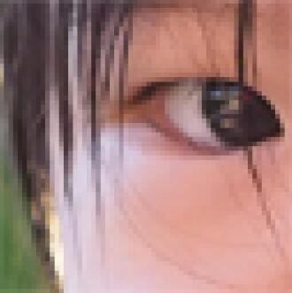
原因
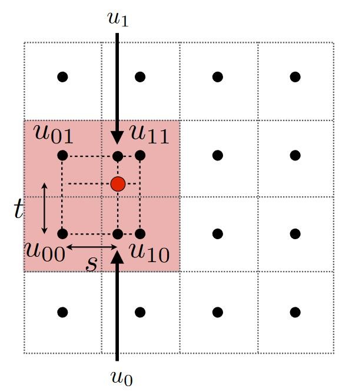
上图格子为纹理图，每个格子是一个texel。像素上某点映射到texel的红点位置。常规方法会取红点所在的texel的中心位置的value做为该像素的value。 同理，所有映射到这个texel上任意位置的pixel，都会得到这个同样的Value。
双线性插值 Bilinear Interpolation
原理
根据红点周围的点的value推断出红点处的value
- 计算出红点的位置(u,v)
- 取邻近四个纹理像素(a,b,c,d)
- 再根据(u,v)在a,b,c,d中的位置插值出(u,v)处的值，即分别做一个横向插值和竖向插值
具体步骤
Linear interpolation(1D)：
\[lerp\left( x,v_0,v_1 \right) =v_0+x\left( v_1-v_0 \right) \]
Two helper lerps:
\[u_0=lerp\left( s,u_{00},u_{10} \right) \]
\[u_1=lerp\left( s,u_{01},u_{11} \right) \]
Final vertical lerp, to get result:
\[f\left( x,y \right) =lerp\left( t,u_0,u_1 \right) \]
效果
虽然还有点模糊，但不是颗粒感的
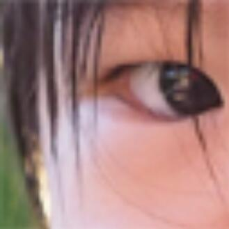
💡 插值就是以距离为权重求加权平均，加权平均能增加平滑但导致模糊。
双向三次插值 Bicubic
- 取周围16个点
- 三阶插值
效果：
💡 一次插值剂量不够就再插一次。
本文出自CaterpillarStudyGroup，转载请注明出处。
https://caterpillarstudygroup.github.io/GAMES101_mdbook/
问题描述
现象
纹理像素分辨率过大，比被贴图的表面更精细，也会出现问题。例如：
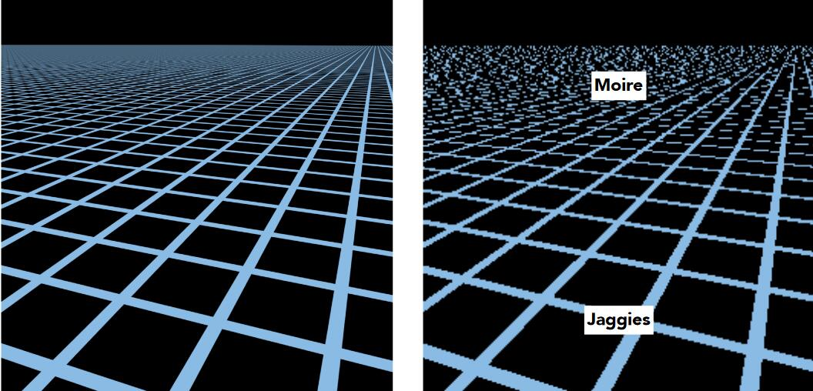
👆 左：期待效果 右：实际效果
原因
由于透视的原因，不同距离的屏幕像素对应的纹理像素区域不同
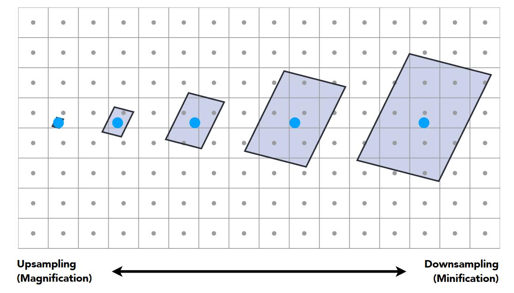
👆 有的像素对应一小部分纹理像素，有的像素对应较大区域的纹理像素
- 在近处，物体表面比纹理图更精细，即Texture Magnification问题，见上一页，表现为锯齿。
- 在远处，纹理图比物体表面精细，一个屏幕像素对应一片纹理像素，但只取一个纹理像素来代表这一片点，也会出现问题，表现为摩尔纹
进一步解释，从纹理图中取一个texel的过程可以看作是对纹理图的采样。alias的本质是信号变化过快而采样跟不上信号变化的速度。纹理的变化快而采样点稀疏就导致了这种现象。
💡 两个空间的映射，任何一方的不匹配都会现alias，那就对变化快的一块做平均，或对变化慢的一方做细分。
解决方法一：超采样 MSAA
🔎MSAA
- 原理
对于远处的一个点，取512个texel的value的平均值。
- 效果
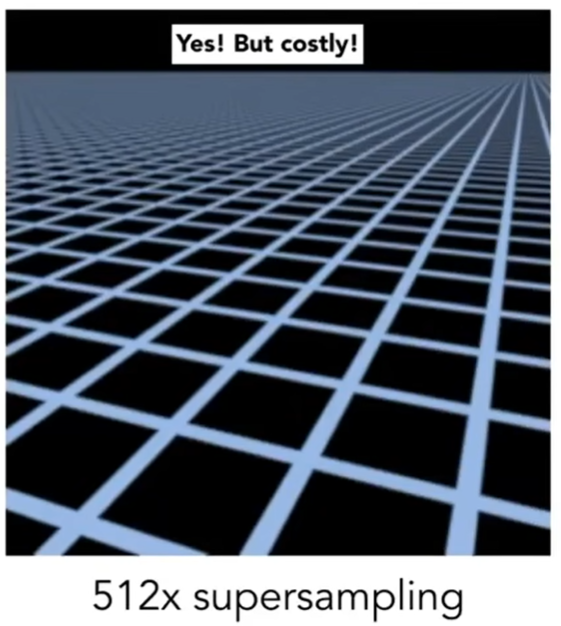
- 局限性
可解决，但costly。
解决方法二： Mip map[44:20]
原理
点查询（采样）-->范围查询（取一个范围的平均）。
📌
范围查询的应用场景非常广泛，除了CG，还有其它很多领域会用到。
范围查询的目标也有多种，例如取范围内的最大值、最小值、平均值。在这里要查的是平均值。
范围查询的算法也有很多种，在当前场景下使用同MIP Map算法来做范围平均值的查询。
Mip Map算法
- 作用：用于范围内平均值的查询
- 特点：快，不精确（近似），只能查询正方形区域
-
原始纹理称为第0层纹理，根据第0层纹理预先生成出第1-7层纹理。每一层都是上一层缩小一倍。1-7层低分辨率纹理总共仅消耗额外1/3存储。
[47:17]
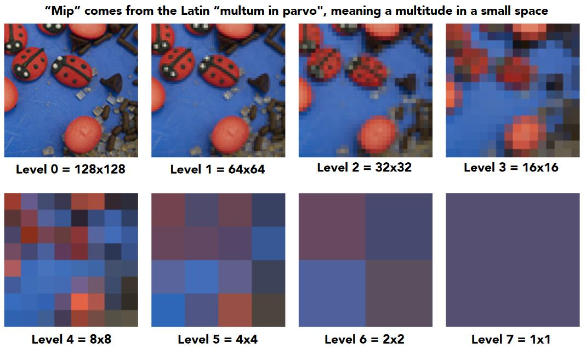
-
找出屏幕上的一个像素对应的纹理上的近似方形区域。
[52:30]
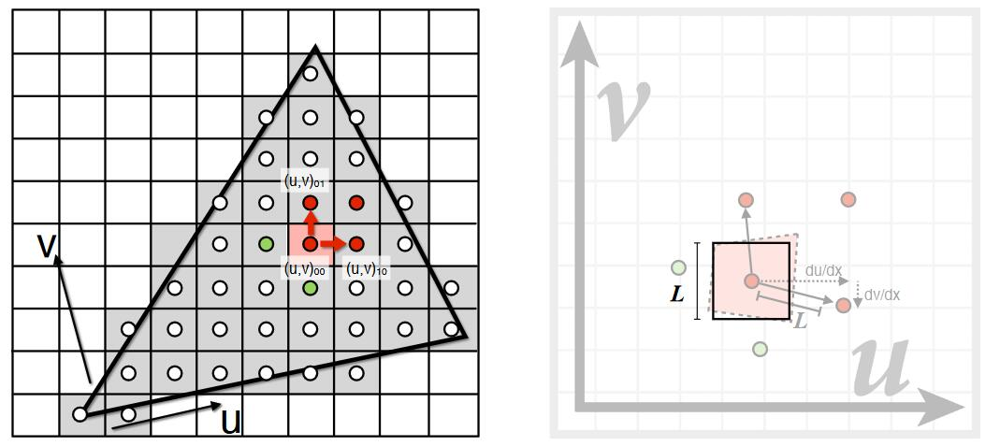
第一步：画出像素对应的四边形区域
已知某像素及其邻居像素对应的texel的位置。像素与上面邻居像素对应的texel位置的中线，认为是像素对应的texel的上边界。
以这种方法，可以在纹理上画出一个不规则四边形区域。
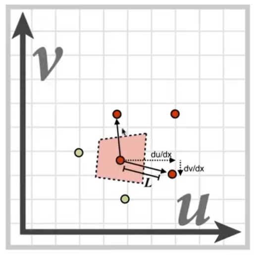
第二步：用一个正方形来近似这个不规则四边形区域。
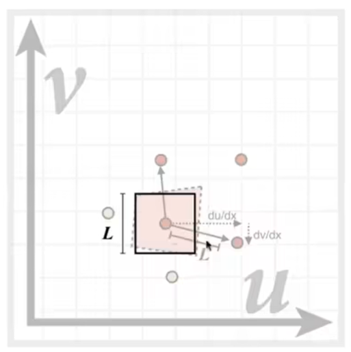
边长L为：
$$ L = \max(\sqrt{(\frac{du}{dx})^2+(\frac{dv}{dx})^2}, \sqrt{(\frac{du}{dy})^2+(\frac{dv}{dy})^2}) $$
❓ 问：这个公式没有看懂。x和y分别是指什么呢？公式里的变化量是什么呢？是什么和什么之间取最大值？
✅ 答：x和y分别是两个邻居。L是当前texel与两个邻居之间的距离的最大值。（为什么是两个？为什么是这两个邻居？）公式中的两项，分别代表当前texel和x、y的距离。距离是用勾股定理算出来的。里面的微分量是当前texel到邻居的位置变化，分别对应横轴的变化和纵轴的变化。
这只是一种近似方法。可以用其它达到近似目的的方法。
- 根据mipmap计算边长为L的纹理方形区域的均值。边长为L的方形区域，会在第\(\log_2L\)层变成一个像素。直接查在\(\log_2L\)层纹理上查(u,v)的值即可。
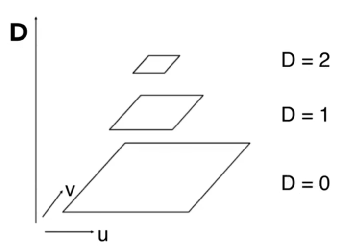
效果
[56：20]
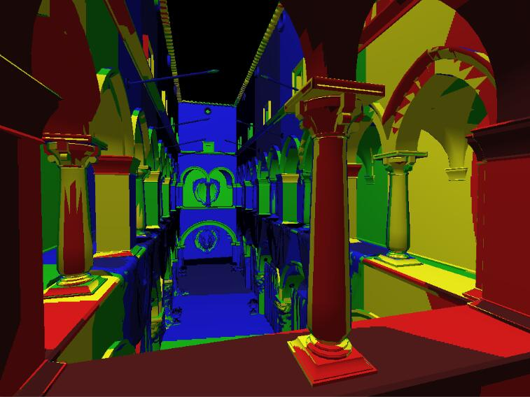
👆 不同颜色代表查询不同的层。
整体上颜色变化反应了需要的纹理大小。但是，存在两层之间的边界，边界处可能存在突变。
💡 提前算好部分范围的值，结果是不同范围的组合。
空间换时间，要想换得好，就要能分解出可以提前计算的部分，且这部分满足：
- 是计算的瓶颈
- 不依赖输入
- 分解与组合方便
改进：三线性插值
原理
这是一种基于mip map的改进，把层数变成一个连续的值，能够解决层数边界上的突变
方法：根据层数再做一次插值，例如需要计算第1.8层的值，就把第1层的插值结果与第2层的插值结果再做一次插值 [57:52]
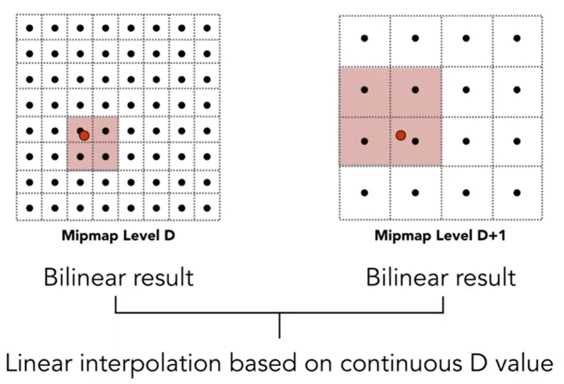
效果
[1：00：20]
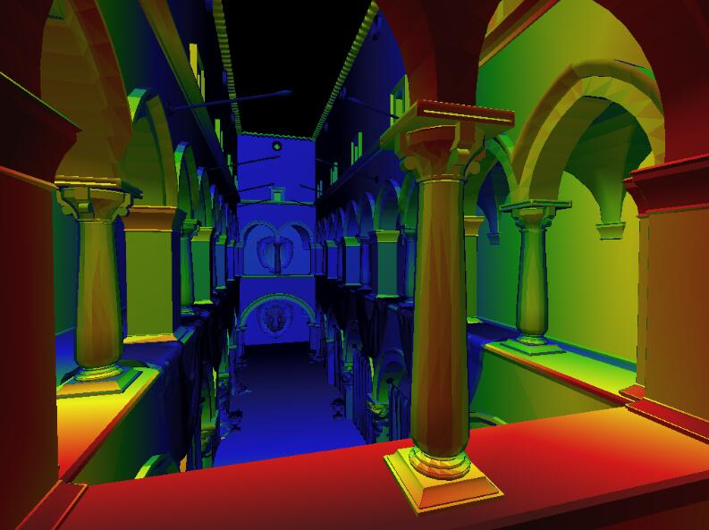
👆 不同颜色代表查询不同的层。层与层之间存在渐变的过渡。
💡 层数很明显是离散信息，连续的层数没有意义，但可以用来插值。总之，万物皆可插。
回到原来那个问题，假设把512超采样的结果看作是这个问题的GT，对比三线性插值后的效果：
| 512超采样 | 三线性插值 |
|---|---|
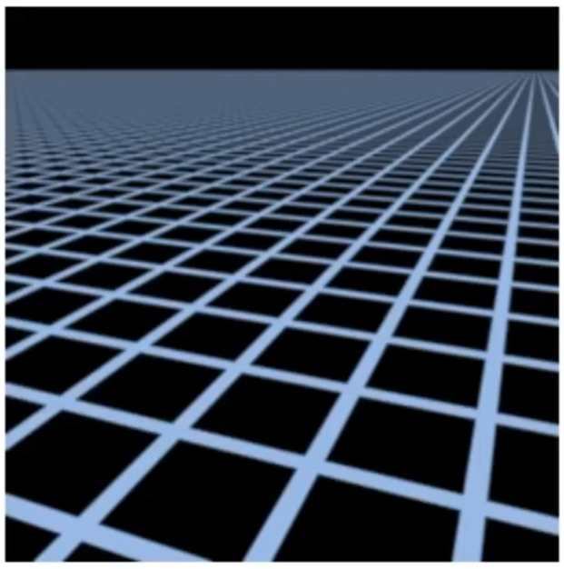 | 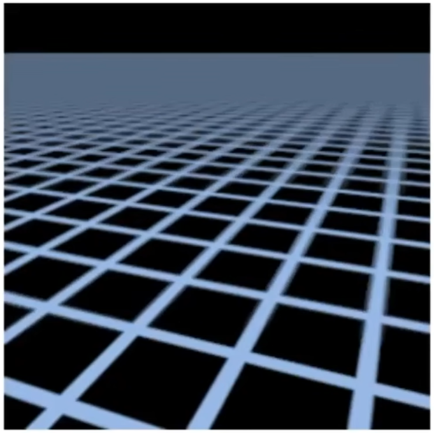 |
远处没有摩尔纹，但是变成了一片灰色，这种情况称为overblur。
这是因为mipmap只能计算方形区域。而根据上图可以看出，屏幕的方形区域不对应纹理图上的方形区域。
改进：Ripmap：各项异性过滤(Anisotropic littering)
原理
MipMap只预计算图中对角线上的图片，它假设纹理是按同比例压缩的。但事实上不是这样。
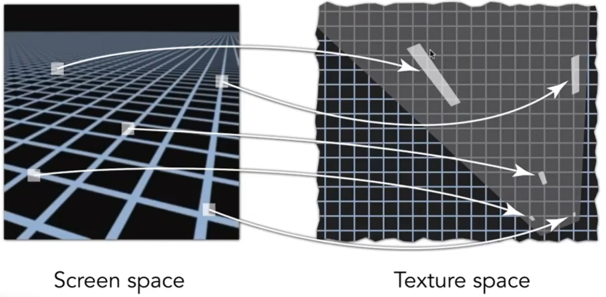
👆 屏幕的方形区域实际上是对应纹理空间的不规律形状，如果用正方形来代表这长条，会发生过渡blur。 [1：04：40]
💡 如果我来解这个问题，我会把一个倾斜成多个大小不同的正方式。再以正方形的大小为权重对正方形结果求平均。
各项异性过滤对原始纹理做不均匀压缩，这样，就可以查询到在纹理上一块长形区域，或宽形区域的值。[103：35]
各项异性过滤能解决水平或竖直长方形的问题，不能解决倾斜长方形的问题。
存储开销增加了3倍。
改进：EWA Filtering
[1:06:31]
- 把不规则形状拆成很多不同的圆形去覆盖这个不规则形状。
- 每次查询一个圆形区域，进行多次查询。
❓ 为什么是圆形？
特点：质量越好，代价越大
本文出自CaterpillarStudyGroup，转载请注明出处。
https://caterpillarstudygroup.github.io/GAMES101_mdbook/
2D纹理应用
纹理，原义为贴图。广义上，纹理=内存 + 范围查询（滤波）。通过这样的技术，可以得到很多实用的功能。
用纹理记录环境光照
以一个点出发，向其四周都能看到光，把这些光记录下来，就是环境光照。用纹理来描述环境光照，并环境光照渲染其他物体。
例如：这是某个点的环境光照
用这个环境光照来渲染茶壶，就得到了这样的效果
用纹理记录环境光照时，对光做了一些假设和简化：
- 假设环境光的光源无限远，只记录某个方向上的光的信息（强度、颜色等），不记录光源的深度。
- 在记录光照信息时，不区分光照的种类。
❓ 光源的深度信息对效果有什么影响？
[12:35] Spherical 环境图：
如果对一个点的周围均匀采样，得到的是一个球。因此，记录环境光照的纹理图是一个球面的图（左）。
但把球面的环境光照纹理图展开，会出现扭曲：
❓ 展开后扭曲会有什么影响？渲染正常不就行了？
Cube Map
球表面点和立方体表面点可以一一对应。只要计算出这种对应关系，就能把球面上的光照信息存储到立方体表面。
Cube Map展开后不会扭曲
凹凸贴图 - 用复杂纹理代替复杂几何
凹凸贴图 - 用纹理记录顶点的高度偏移
原理
用纹理定义某个点的相对高度，在物体几何信息不变的条件下，得到视觉上的表面凹凸效果，即：用复杂纹理代替复杂几何
原理：影响高度-->影响法线-->影响着色
Bump Mapping
效果：
具体步骤
- 以2D为例
黑色为原始几何信息。桔色为叠加高度偏移之后的几何信息。由于高度变化带了法线的变化，p点的法线变成了n。如何计算新的方向n？
- 在p点定义局部坐标系，令原始法线方向向上，为(0,1)或(0,0,1)
- 想要让p表现出在p'处的效果，需要计算出在局部坐标系下，p'处的切线方向和法线方向
假设p点沿当前方向向右移动了距离dx，那么它会向上移动dy。切线方向就是(dx, dy)。为了简化计算，令dx=1，只需要求出此时的dy（也就是dp）即可。
$$ dp = c \cdot [h(p+1) - h(p)] $$
c是一个超参，用于控制高度位移的影响大小。
- 根据dp（通过纹理记录的值），直接使用dp就可以得出p'处的切线方向和法线方向
✅ 如果dp是通过高度偏移算出来的，则称为凹凸贴图。如果dp是直接从纹理中查出来的，则称为法线贴图。
切线方向是(1, dp)，对应的法线方向是(-dp, 1)。
-
第一步中把世界坐标系转成了局部坐标系，以保证原始的法线方向是向上的，便于计算。现在要把局部坐标系的法线方向转回到世界坐标系中。
-
根据新的法线做shading
- 3D
$$ dp/du = c1 \cdot [h(u+1) - h(u)] \\ dp/dv = c1 \cdot [h(v+1) - h(v)] $$
| 2D | 3D | |
|---|---|---|
| p的法线方向 | (0,1) | (0,0,1) |
| p'的切线方向 | (1,dp) | (1, dp/du, dp/dv) |
| p'的法线方向 | (-dp, 1) | (-dp/du, -dp/dv, 1) |
❗ 方向算出来之后需要归一化。
法线贴图 - 用纹理记录顶点的法线
与凹凸帖图类似，也是为了达到以假乱真的效果。
💡 只是存储的计算结点不同，但都是假的
位移贴图 - 用纹理记录顶点的高度偏移
位移贴图和凹凸贴图所记录的信息是一样的。
区别是，位移贴图会真的移动几何的顶点位置。
- 位移贴图的优点：
凹凸贴图只是一种视觉的上欺骗，它会在两个地方露馅：
- 边缘是圆的，没有凹凸感
- 缺少“自己阴影投影到自己身上”
位移贴图能真实地改变顶点，不会出现以上的问题
💡 就好像基于经验公式的渲染一定不如基于物理意义的渲染来的真实。假的总有模仿不了的，这会成为它的局限性，但它能简化问题。
- 位移贴图的局限性：
位移贴图要求模型的三角形足够细。因为它只能改变顶点位置。如果三角形比较大，三角形内部的位置就不能改变。
从采样原理解释就是，模型表面的采样频率应该能跟上纹理变化的频率。
- 改进：动态三角形细分
这是应用在direct X里面的一套方法。
先使用比较粗的模型，在应用纹理的过程中检测并动态地决定是否需要对三角形做细分。
用纹理记录之前算好的信息
[35:35]
例如着色、阴影等信息，是可以提前算好，写到纹理图中，然后再应用纹理。
例如上图中，中间图存储了原图的环境光遮蔽信息。这是一个[0,1]的信息，用于表达原图对应位置是否由于被其它部位遮蔽而呈现出较深的颜色。
应用是把着色结果与这个遮蔽信息相乘。
💡 提前准备是空间换时间的通俗表达。提前准备好仍免不了计算，只是把计算提前了，该做的仍然要做。
提前准备好也有可能会有实际上用不到的风险，那么这一部分提前计算会被浪费。提前计算消耗的是廉价的时间和空间，一但用上了，省去的是昂贵的运行时计算的时间，因此是高回报的投资。
本文出自CaterpillarStudyGroup，转载请注明出处。
https://caterpillarstudygroup.github.io/GAMES101_mdbook/
3D纹理应用
纹理不只有表面，内部也可以有值。给空间任意一点都定义一个值，就是3D纹理。
用于生成随机的3D物体表面
纹理并非实际定义，而是通过noise函数生成（[35:01]右）。
💡 提前准备好的方式有很多，不一定非要把每个需要的值算出来的，关键是运行时能不能很快的获取到某个值。
用于体渲染
[P10,38:06] 存储3D信息并用于渲染
本文出自CaterpillarStudyGroup，转载请注明出处。
https://caterpillarstudygroup.github.io/GAMES101_mdbook/
几何的表达方式
几何的表达方式分为隐式表达和显式表达。
隐式表达[46:35]是指，不提供点的具体位置，只提供点应满足的约束f(x,y,z)=0。
隐式表达可以快速判断一个点在不在物体表面上。但是难以列举所有在表面上的点。
显式表达有两种方式：
- 直接给出所有点的具体位置
- 给出一些点，以及这些点到另一些点的映射关系，例如\(f:R^2 \rightarrow R^3\) 显式表达可以快速地列出所有在表面上的点，但难以判断一个点在不在表面上。
实际场景中，会根据需要使用不同的表达方式
隐式表达举例
【P10，1:02:05】
| 类型 | 举例 | 表达方式 |
|---|---|---|
| Algebraic Surface | \(x^2 + y^2 + z^2 = 1\) | |
| Constructive solid Geometry | 通过基本几何之间的运算来定义新的几何 | |
| Distinct Function | [1:01:23] | 定将一个函数，来描述任意一个点到物体表面的最近的距离。距离为0的点就是边界。 |
| Distinct Function | [1:02:20] | 可对距离函数做blending |
| Fractals 分形 | [1：12：44] | 自相似。容易引入走样 |
距离函数blend相关的补充：
- 距离函数blend可以用于物体运动过程的插值。
图中A和B代表模型在两个动态状态的效果，如果用非SDF(signed distance field)的方式表达，对A和B做线性混合之后会得到这样的效果：
我们实际想到的是物体从A状态运动到B状态的效果。这个效果与我们预期的不一致。
如果用SDF来描述A和B，对两个SDF做blend就能够达到目的了。 - 两个SDF做blend得到新的SDF，怎么再根据SDF恢复出物体的表面？
答：marching cube。在格子上找出f(x)=0的点，然后把点连起来。
💡 基于骨骼动作的mesh blending也能达到这个效果。因此重要的不是隐式或显式，而是有没有抓住运动的来源。
优点：
- 容易描述
- compact 表达
- 容易判断一个点是否在模型的内部/外部
- 容易计算离表面的距离
- 容易计算光线与表面的夹角
缺点： - 难以描述复杂对象
显式几何
映射[P10]
点云 point cloud
list of points
足够可以表示任意的几何形状
常用于扫描输出
常被转换为其它表达方式再使用
Polygon Mesh
应用最广泛。
以三角形、四边形为主
obj 文件格式：
- v：顶点坐标
- vn:顶点法向量，数量同v
- vt：纹理坐标，最多为（顶点数 * 面片数）个
- f：面片，v/vt/vn
本文出自CaterpillarStudyGroup，转载请注明出处。
https://caterpillarstudygroup.github.io/GAMES101_mdbook/
Bezier曲线（显示表达）
定义
[13：24] 用一系列控制点定义曲线
例如定义这样一组控制点：
要求所生成的曲线满足这样的性质：
- 起始点同p0位置
- 起点处的切线方向同\(\vec{p_0p_1}\)
- 终点同为p3位置
- 终点处的切线方向同\(\vec{p_2p_3}\)
de Casteliau算法
根据给定点序列画Bezier曲线
给定3个点，画Bezier曲线
把起点看作是t=0时刻，终点看作是t=1时刻，画Bezier曲线，相当于求t=[0,1]区间时pt所在的位置。把范围所有时刻的pt连起来就是Bezier曲线。
- 算出b0b1中的t位置的点为\(b^1_0\)
- 算出b1b2中的t位置的点为\(b^1_1\)
- ab连成一条线，算是ab中的t位置的点为\(b^2_0\)
- \(b^2_0\)是 Pt 的位置，
给定4个点，画Bezier曲线
[23:24]
Bezier曲线的代数表示
推导过程省略，最后的结论是：
$$ b^n(t) = b_0^n(t) = \sum^n_{j=0} b_j B^n_j(t) $$
- \(b^n(t)\) 表示最终结果，在Bezier曲线上t时刻的点的位置。
- \(b_0^n(t)\)的上标n表示这个点在第n层线段上的点。初始控制点组成的线段为第0层。第n层为最后一层。下标0代表这一层的第0个线段。由于第n层只有一个线段，因此下标只能是0。\(b_0^n(t)\)是第n层的线段上的t时刻的点，其实就是对应最终结果了。
- \(b_j\) 是初始控制点，也可以表示为\(b_0^n(0)\)及\(b_0^n(1)\)，其实是第0层的上一层。
- 从公式可以看出，\(b^n(t)\) 是一组控制点的线性组合，组合的系数是B，即与t有关的多项式
✅ 以上公式对3D控制点同样适用
Berstein多项式
$$ B^n_j(t) = \begin{pmatrix}n \ j \end{pmatrix} t^j(1-t)^{n-j} $$
性质
- 在给4个控制点的情况下，b(0)的切线方向为\(3(b_1 - b_0)\)，b(1)的切线方向为\(3(b_3 - b_2)\)。
❓ 问：为什么会有系数3？既然是方向，\(3(b_1 - b_0)\)和\((b_1 - b_0)\)都是同一个方向。
答：（来自弹幕）切线也是有值的，值越大原来曲线变得越快。
-
用控制点画出曲线，再把曲线做仿射变换 = 对控制点做仿射变换，用变换后的点画曲线
-
画出的曲线，一定在控制点形成的凸包内。
Piece-wise Bezier曲线
- Why
[38:23] 当控制点比较多时，Bezier曲线不利于控制
- How
把多个点分段，每4个点画一条曲线，例如photoshop中的钢笔功能。
- What
光滑的Piece-wise Bezier曲线
C0连续：数值上连续
C1连续：切线连续（方向和大小都要一致），即光滑
C2连续：曲率连续
要使分段的Bezier曲线光滑（C1连续），需要让上一段的终点和下一段的起点切线一致。这可以通过控制点的位置来实现。
Splint 样条
定义： 一条曲线，由一系列控制点来控制，且满足一定的连续性
B-spines
B: basis，基函数，即与以一定方式将基函数组合，得到一个复杂函数
局部性：移动一个控制点，只在一定范围内影响这个曲线
（这个内容比较复杂，本课不展开了）
本文出自CaterpillarStudyGroup，转载请注明出处。
https://caterpillarstudygroup.github.io/GAMES101_mdbook/
Bezier 曲面[54：40]
在两个方向上分别应用插值
以4*4个控制点为例
- 在水平方向上计算得到4个曲线
- 以曲线上的点作为竖直方向的控制点，再算一次曲线
本文出自CaterpillarStudyGroup，转载请注明出处。
https://caterpillarstudygroup.github.io/GAMES101_mdbook/
Basic
通过定义点的位置和点之间的连续关系，来描述一个曲面。
在mesh上的操作有：
- 网速细分：引入更多三角形，并调整顶点坐标。使表面更光滑
- 网格简化：在保持基本形状的情况下，用更少的三角形
- 网格 Regularization：使网格更接近正三角形，这样对渲染更友好
网格细分 [09：26]
目的：引入更多三角形，并调整顶点坐标。使表面更光滑
基本方法都是通过平均的方式让平面的局部得到平滑，类似图像的模糊操作。
✅ 立方体不断细分后会变成球体，因为细分的目的是变光滑。
Loop 细分算法
[11:30] (loop 是人名，不代表循环）
第一步： 划分三角形
第二步：更新new顶点的位置
new顶点被两个old三角形共享，更新公式为：
\[ p = \frac{3}{8}(A+B) + \frac{1}{8}(C+D) \]
第三步：更新old顶点的位置
old 顶贞被多个 old 三角形共享
更新公式为：
\[ p = (1 - n * u) * pos + n * neighbor \]
n:与old顶点连接的边数
u:一个经验值
pos: old顶点更新前的位置
neighbor: old顶点的所有邻居的位置之和
Catmull-Clark 细分
loop 细分只能用于三角形面片，而此算法则更通用
定义
Quad face：四边形面片
Non-quad face：非四边形面片
奇异点： degree不为4的点，degree 表示与点相邻的边数
第一步：取所有边上的中点与面上的中点
把边中点与面中总用一条线连起来
操作后，增加的奇异点个数与 操作前的non-quad face 数相同，且所有的面都变为 quad face
第二步： 更新面中心的新增点，
更新公式为：
\[ f = \frac{v_1 + v_2 + v_3 + v_4}{4} \]
❓ 如果是在一个三角形面片的中心呢？
第三步： 更新边中心的新增点
更新公式为：
\[ e = \frac{v_1 + v_2 + f_1 + f_2}{4} \]
更新 old 顶点
更新公式为：
\[ p' = \frac{f_1 + f_2 + f_3 + f_4 + 2(e_1 + e_2 + e_3 + e_4) + 4p}{16} \]
💡 以上这些方法都是基于经验估计。
new point的位置不是该是由邻居点使用固定加权值得到，这个权值应该是不固定的，与old point和neighbour的距离有关。
这些都是local细分方法，要想细分后与原mesh形状接近，应该使用global方法。
同时，mesh细分是对丢失信息的补全，要想猜丢失的信息，还需要从其它mesh的统计规律、物理意义、人为知识中得到先验信息。
Mesh 简化
- 由于计算能力不足，需要简化模型
- 有些场景中，不需要足够精细的模型
边坍缩 Edge Collapse
- 原理：
- 选择一条边，把边坍缩成点
- 建立边周围的点到新点之间的边
- 使坍缩后的形状与坍缩前尽量接近
- 要解决的问题：
- 要坍缩哪些边？
- 边坍缩成点以后，这个点应该放在什么位置？
- 怎么衡量坍缩后的形状与坍缩前的接近程度？
衡量坍缩后的形状与坍缩前的接近程度
Quadris Error Matrics 二次误差度量
二次误差度量用于衡量“坍缩后的形状与坍缩前的接近程度”，使算法可以基于此标准选择要坍缩的边及确定坍缩点的位置。
二次误差来度量[41：17] = new point 到 old edge（或old face） 的距离平方和。
❓ 为什么以这种方式定义距离。不太直观。
✅ 这种度量也是local度量，大部分情况下local就够用了。
确定坍缩点的位置
例子：

坍缩点的位置应该在使二次度量误差最小的地方。
找到坍缩点转化为一个优化问题。
选择要坍缩的边
把所有边都尝试坍缩，评估一下每条边如果要做坍缩并选择了最好的坍缩点位置，会得到多少误差。最后选择造成误差最少的边。
即：遍历-计算-排序-选择-坍缩
每次选择当前最优，这是贪心的思想。不一定最终是最优，但是至少效果可用。
- 存在的问题：
计算一条边的坍缩点及坍缩误差是一个优化问题，用迭代法来解。因此“遍历-计算”是一个比较耗时的过程。
尤其是使用“遍历-计算-排序-选择-坍缩”的过程坍缩了一条边之后，坍缩过程对被坍缩的边周围的边造成影响，上一轮的“遍历-计算”的结果已经不适用了，不能直接基于此结果做排序和选择。
- 解决方法：
优先队列。动态更新受影响的边。
预处理：遍历-计算-生成队列
循环：取队列top - 坍缩 - 部分点重新计算 - 更新队列部分点
💡 计算出new point的位置后可以再调整一下old point的位置。
网格 Regularization

本文出自CaterpillarStudyGroup，转载请注明出处。
https://caterpillarstudygroup.github.io/GAMES101_mdbook/
阴影
Shadow Mapping 算法
Shadow Mapping是一种基于光栅化的生成阴影的经典算法。
特点
Shadow Mapping算法具有以下特点：
- 在生成阴影的这一步，不需要知道场景的几何信息
- 走样现象
- 该算法只能处理点光源
❓ 为什么说不需要知道场景的几何信息呢？第一步和第二步都用到场景的几何信息了啊。
✅ 点光源产生硬阴影，面光源产生软阴影。
原理
如果一个点不在阴影里，那么必须同时满足：
- 人（camera）可以看见点
- 光源可以看见点
具体步骤：
- 从光源看向场景[55：13]，记录能看到的点的深度(shadow map)。
| 原图 | 光源视角 | 深度图 |
|---|---|---|
✅ 找到满足“光源可以看见”的点
- 从眼睛看向场景[56：41]，记录眼睛能看到的点。
✅ 找到满足“相机可以看见”的点
- 把眼睛能看到的点投影回step1记录的深度图上，即推出它会出现在深度图的哪个像素上
✅ 计算点在“光源视角”和“相机视角”的对应关系
- 如果点到光源的深度与叫step1记录的这个方向的深度一致， 则：这个点可被光源和 camera 同时看到，不在阴影中。否则：在阴影中
✅ 分析点是否满足“阴影条件”
| 不在阴影中 | 在阴影中 |
|---|---|
效果
光源是左上角的白点
存在点的问题
- step 4判断距离是否相等，但距离是浮点数，浮点数有精度问题
- step1生成的shadow map的分辨率 VS 渲染的分辨率
- 增加一遍渲染
- 只能做硬阴影（点光源）
❓ 怎么理解增加一遍渲染，不能同时渲染吗？
硬阴影 Vs 软阴影
| 硬阴影[1：11：40] | 软阴影[1：12：09] |
|---|---|
| 边缘锐利 | 边缘慢慢过渡 |
软阴影的形成原因：半影[1：13：31]，光源较大，部分光源被挡住
✅ 从面光源的不同位置看向物理，得到的z-buffer是不同的。第一步只能记录一个点相关的z-buffer，因此无法处理面光源。
本文出自CaterpillarStudyGroup，转载请注明出处。
https://caterpillarstudygroup.github.io/GAMES101_mdbook/
光线追踪与光栅化是两种不同的呈像方式，但光栅化具有“can't handle global effect well”的局限性，不能呈现出以下的效果：
✅ 一个像素上所呈现的效果，只与像素附近的几何信息有关，例如position, normal，只是在遮挡的时候考虑了global
- 软阴影
✅ 考虑来自不同方向的光源
- glossy反射。glossy是指像有点粗糙的镜子，或打模非常光滑的金属的一种材质
✅ 考虑邻居像素的normal
- 间接光照，即光线弹射不止一次
✅ 考虑与其它物理的交互
因此有了光线追踪技术。
光栅化速度快，质量差， 能达到real-time。光线追踪速度慢，质量好，通常用于offline。
光线追踪最基本的假设
- 光线沿直线传播
- 光线可以交叉但不发生碰撞
- 光线从光源出发，经过不断弹射，打入眼中。
- 光路可逆。可以理解为从眼睛出发，追踪光路直到光源。
本文出自CaterpillarStudyGroup，转载请注明出处。
https://caterpillarstudygroup.github.io/GAMES101_mdbook/
Ray Casting 算法[20：40]
Ray Casting目标是找到从眼睛到光源之间的光路。
假设
- 光源是点光源。
- camera 是一个点
- 完美折射（不考虑反射）
- 只弹射一次
✅ 仍只考虑local信息，解决不了前面的问题
具体步骤
- 从眼睛向每个像素投出一根视线(eye ray)
- 光线和场景相交，求最近的交点
- 交点与光源连线，判断定是否在阴影中
- 算着色
- 写回像素值
💡 这个算法和前面的光栅化没有 本质区别。只是遍历眼睛出发的光和遍历物体收到的光的区别。前者只计算用于渲染的部分，而不是计算全部，减少计算量。
本文出自CaterpillarStudyGroup，转载请注明出处。
https://caterpillarstudygroup.github.io/GAMES101_mdbook/
Whitted-风格算法(递归)
假设
- 光源是点光源。
- camera 是一个点
- 折射 + 反射
- 可以无限次弹射
具体步骤
[23：20]
- 从眼睛向每个像素投出一根视线(eye ray)
- 光线和场景相交，求最近的交点
- 光线在交点与可以发现反射和折射，反射和折射又新形成新的交点。反射能量 + 折射能量 <= 1
- 所有的交点都称为弹射点。弹射点与光源连线，判断定是否在阴影中
- 所有弹射点的着色求和[26：23]
- 写回像素值
一些名词
- primary ray：眼睛打出的光线
- secondary ray： 经过弹射的光线
- shadow ray：物体与光源的连线
效果
本文出自CaterpillarStudyGroup，转载请注明出处。
https://caterpillarstudygroup.github.io/GAMES101_mdbook/
Ray-Surface 交点
定义
光线是一根射线，包含起点和方向，用(o, t)表示，即（起点，方向）
ray equation：
$$ r(t) = o+td, 0\le t < \infty $$
光线与球的交点
ray: \(R(t) = o + td\)
圆: \((p - c) ^ 2 - R^2 = 0\)
⇒ \((o + td - c) ^ 2 - R^2 = 0\)
解出t，根据物理意义可知，t应满足：（1）t是实数，（2）t>0，（3）如果有两个解，取较小的那个
光线与任意隐式曲面的交点
ray: \(R(t) = o + td\)
曲面： f(p) = 0
⇒ f(o + td)=0 解出t
本文出自CaterpillarStudyGroup，转载请注明出处。
https://caterpillarstudygroup.github.io/GAMES101_mdbook/
光线与三角形的交点
任意一个光线与封闭 mesh 求交，交点个数为奇数则起点在内，交点个数为偶数则起点在外
✅ 事实上很多物体是半封闭的mesh，此时这个结论不一定适用。
因此问题转化为光线与mesh上的三角形面片求交点
常规方法
第一步：光线与三角形面片所在的平面求交点
ray: \(R(t) = o + td\)
平面：\((p-p') \dot N = 0\)
平面公式解释：点乘为0代表垂直，N是平面的法向量，p'为平面上任意一点。平面上的点应满足：它与p'的连线与N垂直。
⇒ \((o + td - p') \dot N = 0\)
解得：\(t = \frac{(p'- o) \dot N}{d \dot N}\)
取t>0的解
第二步：判断交点是否在三角形内
加速方法（MT）
此方法可以同时求出光线与三角形所在平面的交点且立刻判断点是否在三角形内。
假设光线与三角形所在平面交点为p，用三角形的重心坐标来表达p为：
$$ p = (1-b_1 - b_2)P_0 + b_1P_1 + b_2P_2 $$
🔎 三角形的重心坐标
同时p也在光线(O+td)上，因此
$$ O + t D = (1-b_1 - b_2)P_0 + b_1P_1 + b_2P_2 $$
其中大写为3D已知向量，小写为未知标量
通过克莱默法则，可解得：
判定结果AC的条件：t>0, b1>0, b2>0, 1-b1-b2>0
本文出自CaterpillarStudyGroup，转载请注明出处。
https://caterpillarstudygroup.github.io/GAMES101_mdbook/
光线与显式曲面求交
最常见的显式曲面是Mesh。
基本方法
依次判断与曲面上的每个三角形求交。
速度非常慢！！！
因此需要使用一些方法来加速。
Bounding Volumes 包围盒[56：40]
一种可以把物体包围起来的简单几何形状。可用于简体计算。
先判断光线与BV是否相交，然后再求与物体的相交情况。
最常见的BV是长方体。长方体可以看作是3个不同的对面（slab）形成的交集[58:36]。
因此又被称为AABB。AABB = Axis Aligned Bounding Box。
光线与AABB是否相交
以二维情况为例，长方形为2个不同的对面（slab）形成的交集。
- 求光线与x轴方向上的两个对面相交的时间，tmin和tmax
- 求光线与y轴方向上的两个对面相交的时间，tmin和tmax
- 光线进入 AABB 的时间为所有[tmin, tmax] 的交集
- 分析光线与AABB的相交情况
tenter = max{tmin}, texit = min{tmax}
tenter < texit && texit > 0⇒ 光线与AABB 相交
texit < 0 || tenter > texit ⇒ 不相交
tenter < 0 < texit ⇒ 光源在 AABB 内
❗ 以上方法对三维同样适用。计算每对平面的tmin和tmax，然后求交集。
💡 对于凸多边形（体），判断点是否在内部，常规方法是依次判断点是否在边（面）的同一侧。但AABB的特点在于两条边（面）是平行的，因此可以一次判断点跟两条边（面）的关系。
求光线与slab相交的时间
Q:为什么要用 AABB？ A:光线与Axis Aligned平面求交的计算简单[1:15:49]
| 普通平面 | AA平面 |
|---|---|
| \(t = \frac{(p'- o) \dot N}{d \dot N}\) | \(t = \frac{(p'_x- o_x) }{d_x}\) |
利用 AABB 加速 场景中的光线与所有物体求交的过程
均匀的格子 Uniform Grids [8：13]
✅ 算法前提：光线与 Grid 求交很快，与 object 求交很慢 💡 对于复杂操作，先进行快而粗的处理，再进行慢而精的处理，是常见做法。也可以是两者同时进行，前者相当于剪枝。
所设有以下的场景：
- 找到场景的 Bounding Volumn
📌上图中的黑色边框就是BV
- BV划分成格子
- 判断每个 Grid 是否有物体，即判断格子和物体表面是否相交
- 判断光线与 Grid 是否相交，
- 如果Grid内有 object且光线与Grid相交，再计算光线与 grid 内的 object 是否相交
算法特点：
- grid 不能太疏或密
- 适用于 object 的大小接近且位置均匀
- 不适用于 object 分布不均匀的场景
❓ 什么是位置均匀的？我的理解是稀疏，也就是通过AABB排除的部分越多越好。
空间划分 Spatial Partition
[18：59]
- Octree：八叉树，仅在必要的时候继续切，每次切成同样大小的八块。高维度时每一次都要划分出很多块，出现维度灾难。
- KD tree：与八叉树的区别是，每次只选择沿着一个轴方向进行切分，且不一定从中间切
- BSP tree：与KD tree的区别是，不一定沿着轴方向切。因此在计算光线与平面的交点时没那么方便，且维度越高越难计算。
视频以KD Tree 为例子。
构造KD Tree
- 中间结点
划分轴：x,y,z轴轮流
划分点：根据特定的策略选择
child: 2个
object: 不存 object 数据
- 叶子结色
存 list of objects.
Traverse.
递归进行。
如果光线与某个中间结点相交，则继续判断中间结果的子结点，否则跳过。
如果光线与某个叶子结果相交，则继续与叶子中存储的所有objects计算，否则跳过。
局限性
- 如何判断AABB包围盒与objects中的三角形相交。
- object 可能存在于多个叶子结点中
✅ 基于空间划分，obj会重复。基于obj划分，空间会重复。
物体划分 Object Partition
BVH：Bounding Volumn Hierarchy [40：00]
优点：解决以上2个问题
局限性： BV 有重叠，好的划分使重叠尽量少
Create
- 计算 B V
✅ 对所有objects求包围盒的过程非常简单，解决了“判断AABB包围盒与objects中的三角形相交”的问题。
- 对BV内的object划分
✅ 对object进行划分，解决了“object 可能存在于多个叶子结点中”的问题。
✅ 已知BV，挑出在BV内的obj;已知obj，画出obj外的BV。
以上两步交替进行
| 划分 | 生成树 |
|---|---|
但BVH引入了空间的相交。如何划分是效率的关键，好的划分应该让空间的相交尽量地少。
通常选择对最长的轴进行划分，取中间的object作为划分点。当BV中的三角形个数少于门限时停止。
🔎 给一堆无序的数，快速选择算法可以在O(n)的时间点找到第i大的数。
数据结构
- 中间结点：
包围盒、child: 2个
- 叶子结色
存 list of objects.
Traverse
同上
KD Tree VS. BVH [54:25]
本文出自CaterpillarStudyGroup，转载请注明出处。
https://caterpillarstudygroup.github.io/GAMES101_mdbook/
Basic Radiometry 辐射度量学，是对光的物理性质精准建模的方法。因此能够得到更真实的效果。
- 定义了一系列方法和单位
- 给光定义了各种空间中的属性
- 基于几何光学，认为光沿直接传播，无波动性
定义
这是一种基于物理的方法。首先对光的单位和属性做一些定义
| 定义 | 说明 | 符号 | 单位 | 关系 |
|---|---|---|---|---|
| Radiant Energy[1:04:29] | 能量，光源辐射出来的是Energy | Q | J | |
| Radiant Flux | power，即单位时间的能量[1：09：56] | \(\Phi\) | Watt或lumen | \(\Phi = \frac{dQ}{dt}\) |
| Radiant Intensity | power per unit solid angle，即单位时间单位面积上的能量 | I | \([\frac{W}{Sr}]\) | \(I(\omega) = \frac{d(\Phi)}{d\omega}\)，其中分子代码power，分母代表per unit solid angle |
| Irradiance | power per unit area | E | \([\frac{W}{m^2}]\) | \(E(x) = \frac{d(\Phi(x))}{dA}\)，其中A代表光线垂直接触的面积 |
| Radiance [19:30] | power per unit solid angle per unit area | L | \([\frac{W}{Srm^2}]\) | \(L(p, \omega) = \frac{d^2(\Phi(p, \omega))}{d\omega dA\cos\theta}\) |
Radiant Intensity [1:09:20]
power per unit solid angle(立体角)，光源向外辐射能量时与方向有关的辐射概念。
$$ I(\omega) = \frac{d(\Phi)}{d\omega} $$
立体角 [1：13：19]
通常使用弧度制来描述一个角。立体角是2D角度在3D空间中的延伸。用来描述空间中的一个角有多大。
2D角
$$ \theta = \frac{l}{r}, \in [0, 2\pi] $$
3D立体角
$$ \Omega = \frac{A}{r^2}, \in [0, 4\pi] $$
单位立体角
即球面上的单位面积与除以半径平方。
✅ 单位立体角是某个固定大小的立体角。
- 通过\(\theta\)和\(\phi\)定义球面上的一个方向。
✅ 假设朝右的是x轴，朝上的是y轴，朝前的是z轴。从图上看，应该是先以y为轴把坐标系（不是把y轴）顺时针转\(\phi\)，然后以z为轴把坐标系顺时针转\(\theta\)得到一个新的坐标系。所定义的朝向是新坐标系中的y轴正方向在原坐标系中的朝向。
- 计算这个方向上的单位面积
❓ 怎么就从这个方向得到了这个矩形？
假设这个区域是个矩形，横边的长度是\(r \sin \theta d\phi\)，竖边的长度是\(r d\theta\)
✅ 这里反向利用了2D角度公式\(\theta = \frac{l}{r}\)
竖边是以r为半径的2D圆，大小为\(d\theta\)的2D角对应的弧长。
横边是以\(r \sin \theta\)为半径的2D圆，大小为\(d\phi\)的2D角对应的弧长。
$$ dA = (r d\theta) (r \sin \theta d\phi) = r^2 \sin \theta d \theta d \phi $$
- 计算单位立体角
根据定义可知：
$$ d\omega = \frac{dA}{r^2} = \sin \theta d \theta d \phi $$
❗ 后面内容将会用\(\omega\)来表示空间的一个方向。且\(\omega\)可通过\(\theta\)和\(\phi\)来定义。
再看Intensity
Intensity = Flux per unit solid angle，代表了光源在某个方向上的量度。
$$ I(\omega) = \frac{d(\Phi)}{d\omega} $$
反过来说，Flux是Intensity在各个方向上的积分，因此
$$ \Phi = \int_{S^2} I d\omega = 4\pi I \\ I = \frac{\Phi}{4\pi} $$
Irradiance
power per unit area，表示物体在单位面积上接收到的能量。
$$ E(x) = \frac{d(\Phi(x))}{dA} $$
❗ 面积是指与入射光线垂直的区域的面积。如果物体表面与入射光线不垂直，则需要乘以\(\cos \theta\)
| 入射角 | Irradiance |
|---|---|
| \(E(x) = \frac{\Phi}{A}\) | |
| \(E(x) = \frac{1}{2}\frac{\Phi}{A}\) | |
| \(E(x) = \frac{\Phi}{A}\cos\theta\) |
Intensity VS Irradiance
Intensity为光源向某个立体角辐射的能量，与距离无关。因此Intensity不会随着距离变远而衰减，始终是\(\frac{\Phi}{4\pi}\)
Irradiance为单位面积上接收到的能量。距离越远，总面积越大，单位面积上的能量就会越小。因此Irradiance会随着距离变远而衰减，为\(\frac{E}{r^2}\)。
Radiance
Radiance
= power per unit solid angle per projected unit area
= Irradiance per solid angle
= Intensity per projected unit area
用于描述光线在传播过程中的属性。
$$ L(p, \omega) = \frac{d^2(\Phi(p, \omega))}{d\omega dA\cos\theta} $$
考虑一个朝向为\(\theta\)的区域dA，朝方向\(\omega\)上辐射的能量。
Radiance Vs Irradiance
Radiance = Irradiance per solid angle
$$ L(p, \omega) = \frac{dE(p)}{d\omega\cos\theta} $$
- 理解1：
dA区域的能量会向各个方向辐射，辐射的总能量为Irradiance，Radiance描述其中向\(\omega\)辐射的能量有多少
- 理解2：
dA区域会接收来自各个方向的能量，接收到的总能量为Irradiance，其中来自\(\omega\)方向的能量为Radiance。
- 反过来理解
Irradiance是区域dA从不同角度收到的Irradiance的积分。
$$ E(p) = \int_{H^2}L_i(p, \omega)\cos\theta d\omega $$
✅ \(H^2\)代表上半球，不考虑来自背面的光
Radiance Vs Intensity
Radiance = Intensity per projected unit area
$$ L(p, \omega) = \frac{dI(p, \omega)}{dA\cos\theta} $$
与上面类似，也可以有三种理解方式
本文出自CaterpillarStudyGroup，转载请注明出处。
https://caterpillarstudygroup.github.io/GAMES101_mdbook/
BRDF, 双向反射分布函数【29：00】
Bidirectional Reflected Distribution Function
输入：一个入射光线的角度和能量
输出：各个反射光线的能量分布，包含镜面反射和漫反射
反射
反射可以理解为从某个入射角度\(\omega\)打到指定区域的能量radiance。
这些radiance被区域吸收，并从这个区域向各个方向辐射。
✅ 从吸收的视角来理解是radiance，从辐射的视角来理解是irradiance，但是所承载的能量大小是相同的。
BRDF
BRDF则描述了这些irradiance会如何分配到各个立体角上去，即向某个方向辐射的radiance。
BRDF用比例的方式来描述这种分配关系。提供某个立体角上的radiance占的irradiance的多少。
💡 老师没有详细介绍BRDF是什么样的函数。我理解就是一个概率密度函数。漫反射是均匀概率，高光是高斯概率。
以上图为例：
从\(\omega_i\)向指定区域辐射到的能量，也可以说是指定区域从\(\omega_i\)方向吸收到的能量，为：
$$ dE(\omega_i) = L(\omega_i)\cos\theta_i d\omega_i $$
这些吸收到的能量又从这个区域被辐射出去，向\(\omega_r\)方向辐射的能量为：
$$ dL_r(\omega_r) $$
BRDF为“从某个角度辐射的能量”与“来自某个入射角度并向所有角度辐射的总能量”的比例[36:16]，或者说是“从某个角度辐射的能量”与“从某个角度接收的能量”的比例：
$$ f_r(w_i\rightarrow w_r) = \frac{dL_r(w_r)}{dE_i(w_i)} = \frac{dL_r(w_r)}{L_i(w_r)\cos\theta_idw_i} $$
其中分子表示unit area向\(\omega_r\)辐射的能量，分母表示unit area从\(\omega_i\)接收到的能量
不同的材质会有不同BRDF。
反射方程
BRDF为描述某个角度入射光对某个角度出射光的能量贡献，把得到入射角度都积分起来，得到是这个区域往某个角度辐射的能量总量。
$$ L_r(p,w_r) = \int_{H^2}f_r(p, w_i\rightarrow w_r)L_i(p, w_i)\cos\theta_idw_i $$
其中：
\(\int ... dw_i\)：对所有入射方向的积分,，每个入射角wi对同一出射方向wr的贡献的累积
\(L_i(p, w_i)\)：这个入射方向的打到区域的能量，是radiance
\(\cos\theta_i\)：考虑入射方向与被辐射区域的夹角
\(fr(p, w_i\rightarrow w_r)\)：把radiance分给某个出射角
❓ [?] p是什么？代表这个区域？
❗ 任何的出射的 radiance 都会变成其它的入射的 radiance，即公式中的 \(L_i(p, w_i)\)不一定来自光源。 因此，这是一个递归问题。
💡 把渲染过程中的量抽象成符号并归纳成公式，这就是刘老师所说的对问题建模的能力。
同一问题，建了什么样的模型就能得到什么样的结果，因此建模的能力是最重要的。
本文出自CaterpillarStudyGroup，转载请注明出处。
https://caterpillarstudygroup.github.io/GAMES101_mdbook/
渲染方程
Lo(p, wo) = 自己发光 + 来自其它的反射或直射光。
$$ L_o(p,w_o) = L_e(p,w_o) + \int_{\Omega^+}L_i(p, w_i)f_r(p, w_i, w_r)(n \cdot \omega_i)dw_i $$
说明：
\(H^2\)或\(\Omega^+\)：都是表示上半球。定义的积分域为上半球，即不考虑折射。
\((n \cdot \omega_i)\)：和\(\cos\theta\)是一个意思。参考link
第一项：自己发光超某个方向辐射的能量。
第二项：从各个角度来的反射光或直射光向某个方向辐射的能量。
理解1：1个入射光线。[47:44]

$$ L_o(x,w_r) = L_e(x, w_r) + L_i(x, w_i)f(x, w_i, w_r)(n \cdot \omega_i) $$
👆 原视频公式中有两个错误：
折射光Lr不包含自己发光项。Lo才是reflect和emission之和。
最后一项角度用点号不用逗号。
✅ 只考虑一根入射光线的情况不需要积分
理解2：多个入射光线 [47：57]

$$ L_o(x,w_r) = L_e(x, w_r) + \sum L_i(x, w_i)f(x, w_i, w_r)(n \cdot \omega_i) $$
把多个入射光的贡献加起来
理解3：1个面光源 [48：30]

$$ L_o(p,w_r) = L_e(p,w_r) + \int_{\Omega}L_i(p, w_i)f(p, w_i, w_r)(n \cdot \omega_i)dw_i $$
面光源可以看作是无穷多个小的点光源的积分。
因此单个点光源的累加变成了\(d\omega_i\)的积分。
理解4：来自其它物体的反射光作为入射光线[49:31]

x是X物体上的一个点，X'是另一个物体。
\(L_r(X', -\omega_i)\)是X'发出（自身发光或反射）的光以\(\omega_i\)角度辐射x
\(L_r(X, \omega_o)\)是X发出（自身发光或反射）辐的光，可能也在以某个角度辐射另一个物体。
递归问题
把“理解4”中的公式简化，得：
$$ l(u) = e(u) + \int l(v)K(u,v)dv $$
其中：
l(u)：未知量
e(u)：自己发的光
I(v)：未知量
K(u,v)dV：材料属性
进一步简化得到公式的算子形式:
$$ L = E + K L $$
解得:
$$ L = E + KE + K^2E + k^3E + \dots $$
其中：
E：光源直接发出的能量
KE：光源辐射能量经过一次反射后的能量，又称为直接光照
\(K^nE\)：多次反射，统称为间接光照
全局光照：直接光照与间接光照的集合
光栅化中的着色：包含光源和直接光照，不包含间接光照，因此效果有限
效果
- 直接光照

- 直接光照 + 1次间接光照

💡 为什么这么复杂的光照过程能被看上去这么简单的公式精确模拟？
因为它是基于物理的简化，物理规律就是简洁且真实的。
本文出自CaterpillarStudyGroup，转载请注明出处。
https://caterpillarstudygroup.github.io/GAMES101_mdbook/
概率论基础 [1:05:45]
省略，见机器学习数学基础
PDF：概率密度函数
✅ 前面是对问题的建模，现在开始是对问题的求解。
解渲染方程有两个难点：（1）复杂函数的定积分（2）递归问题。使用Monte Carlo解决1，使用Russian轮盘赌解决2. 后面的改进方法解决特殊情况下普通的Monte Carlo不适用的问题。
复习渲染方程
复习渲染方程，回顾求积分的业务背景
$$ L_o(p, w_o) = L_e(p, w_o) + \int_{\Omega^+}L_i(p, w_i)f_r(p, w_i, w_o)(n\cdot w_i)dw_i $$
其中：
第一项：自己发的光
Li：接收到的光
fr：反射参数，与材料有关
n*wi：夹角
dwi：积累所有的方向
蒙特卡罗积分 Monto Carlo Integration
目标：求任意函数的定积分\(\int_a^bf(x)dx\)
函数f(x)的在[a, b]区间内的定积分，其物理含义是图中阴影部分的面积。
但是f(x)比较复杂，难以从公式推导上去求解这个问题。
黎曼积分 [11:10]
没听懂，大概是用某种方法简单地把阴影近似成一个或一些长方形，把长方形的面积当作是阴影的面积，因此求得的是近似值。
蒙特卡罗积分
原理
用另一种方法来估计阴影部分的面积。所估计出的面积也是近似值。
方法
- 在积分域内不断地采样，采样点为xi
- 采样点对应的value是f(xi)
- 多次采样，并对采样结果的value取平均
- 把阴影近似成一个长方形，长方形的宽为区域范围(b-a)，高为第3步的平均值
则：
$$
\int_a^bf(x)dx \approx E(f(x))(b-a)
$$
当采样次数越来越多，f(xi)的平均值逐渐接近f(x)的期望。也因此长方形的面积也会逐渐接近阴影面积的真实值。
进一步理解
前面所说在积分域内随机采样，通常会理解为是均匀采样。实际上，用任意的采样函数做随机采样都是可行的。
例如使用概率密度函数：
$$ X_i \sim p(x) $$
则：
$$ \int_a^bf(x)dx = \frac{1}{N}\sum\frac{f(X_i)}{p(X_i)} $$
特点
- 只需要能对[a b]以一定方式采样，就可以求出定积分。对f(x)和p(x)都没有特殊的要求。
- 采样次数越多，结果越准确。
- 积分域和采样域必须相同。
✅ p(x)至少要是一个pdf，且p(x)与f(x)的作用域相同。虽然对任意的p(x)，能得到正确的期望，但方差不同。p(x)与f(x)的形状越接近，方差越小。
本文出自CaterpillarStudyGroup，转载请注明出处。
https://caterpillarstudygroup.github.io/GAMES101_mdbook/
Whitted-Style Ray Tracing 的局限性[20:40]
- 光线打到光滑材质，会发生镜面反射。
因此只能做出镜面反射的效果，无法处理Glossy材质的反射效果
- 光线打到透明物体，不会折射
- 光线打到普通物体，会漫反射，然后停止
💡 因为它对反射的光线做了枚举，而枚举一定是有限的。渲染方程对反射光线做了统计，统计能反应真正的规律。
光线打到漫反射表面后就不在弹跳了，导致光源没有直接照的地方是黑的，例如天花板和物体的侧面。实际上漫反射的光线也应该继续弹跳，照亮天花板。左边的墙上的光线弹到对面的物体上，使物体侧面也呈现出红色(color bleeding效果)。
Whited Style 算法有局限性，但 rendering 公式是正确的。正确解出 rendering 公式，会得到正确的算法。
本文出自CaterpillarStudyGroup，转载请注明出处。
https://caterpillarstudygroup.github.io/GAMES101_mdbook/
PathTracing
渲染方程：
$$ L_o(p, w_o) = L_e(p, w_o) + \int_{\Omega^+}L_i(p, w_i)f_r(p, w_i, w_o)(n\cdot w_i)dw_i $$
通过解渲染方程，可以得到正确的算法。
但它有以下两个难点：
- 公式的第二项是一个定积分，比较难求，可以使用Monto Calio方法解出它的近似值。
- 这是一个递归公式。
用 Monto Calio 方法解定积分
场景1[32：18]
先考虑一个简单场景：
只考虑这一个着色点、只考虑直接光照、且被照射点不发光。
有一个物体会遮住部分、有一个较大的面光源。
入射光线为上半球所有Wi，且均匀分布。出射光线为 Wo。
求这个点接收到并向wo辐射的能量。
根据渲染方程，有：
$$ L_o(p, w_o) = \int_{\Omega^+}L_i(p, w_i)f_r(p, w_i, w_o)(n\cdot w_i)dw_i $$
由于本场景假设只考虑直接光照，那么\(L_i(p, w_i)\)只来自于光源。
用Monto Carlio解定积分，假设使用均匀采样，将公式代入以上公式，可将连续问题转化为离散问题，得到：
| 采样函数 | 积分函数 | 积分结果 | |
|---|---|---|---|
| 理论上 | \(X_k \sim p(x)\) | \(f(X_k)\) | \(\frac{1}{N}\sum\frac{f(X_i)}{p(X_i)}\) |
| 实际上 | \(\frac{1}{2\pi}\) | \(L_i(p, w_i)f_r(p, w_i, w_o)(n\cdot w_i)\) 均匀采样 | \(\frac{2\pi}{N}L_i(p, w_i)f_r(p, w_i, w_o)(n\cdot w_i)\) |
其中wi来自采样
💡 连续问题往往比较难解。通过采样的方式把连续问题转化为离散问题，这样就只是需要考虑几个离散的点，就要好解得多。这是复杂问题简单化的一个思路。
场景2[40:40] 引入间接光照
P接收到的辐射不一定来自光源，也可以来自Q。
P接收到的来自Q的辐射 = Q向P发出的辐射。
对于P来说，辐射是来自直射光还是反射光，没有区别。
$$ L_o(p, w_o) \approx \frac{1}{N} \sum \frac{func(w_i)}{1/2\pi} $$
当wi来自光源时，
$$ fun = Li * Fr * cos $$
当wi来自其它物体q时，
$$ fun = shade(q - wi) * fr * cos $$
场景3：一根光线会向多个方向弹射
[46：48] 光线路径数\(rays = N^{bouns}\) 这个量级下计算量会爆炸
因此取 N = l （即 path tracing)，才不会发生爆炸。
即：每次使用Monto Calio求定积分时，只做一次采样。
虽然N取1会导致这个path在求定积分这一步引入较大的噪声。但是穿过像素的不止这一个path。[49：4] path足够多时，多个path的平均会缓解N=1带来的噪声。
如何解递归问题
从公式或者从上面的伪代码都能看出，这是一个递归问题。
递归本身不是问题。问题是这里的递归没有停止条件，会无限地递归下去。
人为定义 bounce 的次数
人为定义 bounce 的次数，当光线bounce这么多次（或者说递归到这个深度）后就强行停止。
这种方法能解决无限递归的问题，但会带来能量的损失。
Russian Roulette 俄罗斯轮盘赌
即不明确定义次数，而是以一定概率p决定是否继续 bounce。以此算出能量Lo。
最后使用Lo/p该点输出的能量。
这个结果的期望与无限 bounce 的理论结果相同，因为：
E = P * (Lo/ P) + (1-P) * 0 = Lo
到目前为止，已经得到一个正常的path tracing流程了。
本文出自CaterpillarStudyGroup，转载请注明出处。
https://caterpillarstudygroup.github.io/GAMES101_mdbook/
Path Tracing 的性能与效率[1:00:32]
现象
👆 图中上面是光源，中间是遮挡物。左：Low SPP。右：High SPP。
SPP：sample per pixel。表示从一个像素出来的path数。SPP低，速度快，但noisy。SPP高，速度慢，但效果好。
怎样才能在Low SPP情况下得到好的效果？
💡 具体问题具体分析。在什么情况下LOW SPP的影响会特别（不）严重。这些场景有什么特点？实验用来分析这种问题最有意义，而不是调参。
分析[1：02：12]
由于是从着色点均匀地向外随机采样，
当光源大时，随机采样更容易遇到光源。
当光源小时，随机采样可能要采很多次才会遇到光源。而其它大多数采样次数都被“浪费”了。
解决方法
解决方法：上半球均匀采样->只在光源上采样
由于MontoCalio方法不限制采样的PDF，可以定义更合理的PDF使得采样结果不浪费。那就是只在光源上采样。
💡 如果我来做会指使高斯分布来采样.可以控制重点
右上角是光源。光源面积是A。那么在光源上采样的PDF是 ：
$$ p(x) = \frac{1}{A} $$
但现在的采样和积分不是针对同一个区间进行的。采样域是光面的所有面积，积分域是x点的所有立体角。因此通过光源位置与球面立体角的关系，把采样域和积分域的统一。可以是（1）改PDF函数，把光源采样的PDF转化成在球面立体角采样的PDF。（2）改积分函数，把立体角上的积分转化成在光源上的积分。在视频算法中选择了后者。
根据立体角的定义可知：
$$ d\omega = \frac{dA\cos\theta'}{||x'-x||^2} $$
❓ 听上去逻辑很顺，总感觉有点怪。上面这个公式要求A的面积不能太大。如果是一个大的光源，是不是要分解成很多小的dA?
❓ 为什么dA不能太大？
代入渲染方程可得：
$$ L_o(x, w_o) = \int_AL_i(x, w_i)f_r(x, w_i, w_o)\frac{\cos\theta\cos\theta'}{||x'-x||^2}dA $$
总结 [1：11：26]
以上优化是针对光源来做的，因此只用于直接光照。
✅ 因为反射的光线可能来自任何地方，不可能对来源做枚举。
因此这个优化算法是，直接光照和间接光照分开处理：
- 直接光照在光源上积分，间接光照仍旧在立体角上积分。
- 直接光照不需要考虑“Russian Roulette”，间接光照涉及多次弹射才需要。
在光源上积分需要判断一个 sample 出的光线是否被挡住
光源被挡住
遍历所有光源，并计算光源对x点的贡献，这里没有考虑光源被挡住的场景。
解决方法：
判断xx'的连线上是否有其它物体。
效果
照片级真实感
其它
- 点光源当成面积很小的光源处理
- 怎样基于一个pdf做采样？
- 怎么选择好的pdf?均匀采样→重要性采样
- 随机数质量对算法的影响
- 把上半球采样与光源采样结合起来
- pixel reconstruction filter
- radiance → color, gamma 校正
本文出自CaterpillarStudyGroup，转载请注明出处。
https://caterpillarstudygroup.github.io/GAMES101_mdbook/
材质与外观
外观是材质和光线作用的结果。因此本章要学的是不同材质和光线相互作用的方式。
材质是渲染方程中的 BRDF 项
BRDF的性质
- 非负性
$$ f_r(\omega_i\rightarrow \omega_r) \ge 0 $$
- 线性
可以把BRDF拆成很多块分别做path tracing再加起来，得到的结果与整个BRDF做path tracing的结果相同。
❓ 拆成多块是什么意思？BRDF不是概率密度函数吗？为什么可以直接相加？不是对入射光做叠加吗？
- 可逆性
$$ f_r(\omega_i\rightarrow \omega_r) = f_r(\omega_r\rightarrow \omega_i) $$
- 能量守恒
出射能量一定不多于入射能量。
- 各向同性：
[1:09:40]
$$ fr(\theta_i, \phi_i;\theta_r, \phi_r) = fr(\theta_i, \phi_i, \phi_r - \phi_i) $$
其中\(\theta_r\), \(\phi_r\)为方位角
BRDF的测量
好像跟算法没关系，不记了。
✅ 实际上BRDF的获取也是图形学的重要内容。
本文出自CaterpillarStudyGroup，转载请注明出处。
https://caterpillarstudygroup.github.io/GAMES101_mdbook/
漫反射材质
漫反射是指：任何方向的光线进来，都会被均匀地反射到各个方向去。
假设：入射光是 Uniform 的，出射光是漫反射，也是 uniform 的，那么BRDF项为fr = c（c 的数值与颜色有关）
$$ L_o(\omega_o) = \int L_i f_r \cos\theta_i d\omega_i $$
这种情况下，Li*fr这一部分是常数，可以提取到wi外面，得：
$$ L_o(\omega_o) = L_i f_r \int_{H^2}\cos\theta_i d\omega_i = \pi f_r L_i $$
化简得：
$$ fr = \frac{1}{\pi} (\frac{L_o}{L_i}) $$
假设材质不吸收任何能量，根据能量守恒，\(L_i = L_o\)，则：
$$ fr = \frac{1}{\pi} $$
但如果材质会吸收任何能量，则：
$$ \rho = \frac{L_o}{L_i} \lt 1 $$
\(\rho\)称为散射率albedo，范围[0，1]，数值与颜色有关。
本文出自CaterpillarStudyGroup，转载请注明出处。
https://caterpillarstudygroup.github.io/GAMES101_mdbook/
Glossy材质[16:14]
类似镜面反射的材质。例如铜镜、抛光的金属。
✅ 类似后面的微表面材质。
本文出自CaterpillarStudyGroup，转载请注明出处。
https://caterpillarstudygroup.github.io/GAMES101_mdbook/
玻璃、水[17:40]
折射 + 反射，例如玻璃和水
反射
入射角 = 出射角
理解1
$$ \omega_i + \omega_o = 2(\omega_i \cdot n ) n $$
根据平行四形法则，wi+wo的结果与n同方向，且大小为\(\omega_i\cos\theta_i\)的两倍
理解2
把wi和wo都看作是空间中的方向，因此可以分解为\(\theta\)和\(\phi\)。出射角和入射角，他们的\(\theta\)相同，\(\phi\)相差了\(\pi\)。
✅ 在以反射平面为xz平面的局部坐标系下
折射
折射定率[28:00]：
$$ \eta_i \sin \theta_i = \eta_t \sin \theta_t $$
说明：
\(\eta_i\)：不同材质有不同折射率。
\(\theta_i\)：入射角
\(\theta_t\)：出射角
当入射材质折射率>出射材质折射率，有可能折射变为全反射
BSDF(散射) = BRDF(反射) + BTDF(折射)
菲涅耳项 [36：11]
反射和折射同时发生时，分别各多少
答：与入射角有关。
如图中，从不同的角度看过去，书的反射的影子强度不同。
计算公式[41：55]，太复杂，用的时候直接查就好了。
本文出自CaterpillarStudyGroup，转载请注明出处。
https://caterpillarstudygroup.github.io/GAMES101_mdbook/
微表面模型 Micro facet Material [43：28]
[46：13]。当物体很远很小时，从远处看， 是平面且粗糙的。从近处看，是几何且镜面反射。[49：09]。
从微观上看，每个几何表面都有各自的法线方向。但拉远后，这些法线方向就抽象成了法线方向的分布。
💡 本身是随机的，适用统计分布。本身是规律的，可以用公式计算规律。也有可能同一件事，从不同角度去看，会得到随机和有规律两种不同的结论。分析出的规律，也有可能最终还是以统计的方式体现。
微表面的粗糙成度可以用法线分布来表示：
- 当微表面的法线方向比较集中，材质就类似于glossy
- 当微表面的法线方向比较分散，材质就类似于diffuse
考虑这样一个微表面：
它的BRDF这样定义：
$$ f(i, o) = \frac{F(i, h)G(i, o, h)D(h)}{4(n, i)(n, 0)} $$
说明：
i和o：分别代表入射方向和出射方向
F：Fresnel项
**G：几何遮挡项，表示微表面的互相遮挡。**发生情况：光线几乎平的打到表面上时。
D：法线方向的分布。当微表面法线方向h与(i, o)的half vector一致时，入射方向i的光能够反射到出射方向o上。D统计了有多少微表面的法线方向为h。
💡 用物理方法模拟的难点在于如何基于物理去建模。用简体近似的方法模拟，难点在于应对不简化不合理地方出现的失真。用数据模拟，难点在于大量高质量的数据。
光追属于第一种，这里的方法属于第二种，机器学习属于第三种。
本文出自CaterpillarStudyGroup，转载请注明出处。
https://caterpillarstudygroup.github.io/GAMES101_mdbook/
各项同性/各项异性材质[1：00：04]
各项同性，即物体微表面不存在一定的方向性，反之则是各项异性。各项异性材质一般是人为制造的材质。
本文出自CaterpillarStudyGroup，转载请注明出处。
https://caterpillarstudygroup.github.io/GAMES101_mdbook/
高级光线传播
无偏 unbiased Vs 有偏 biased
Path tracing 中使用 Monte Carlo 计算积分项的估计值。 不管采样多少样本，都满足E（估计值） = 真实值，称为无偏估计，否则为有偏估计。少量样本时有偏而极限情况下无偏，则称为consistence，这是有偏估计的一种特殊情况。
双向路经追踪 BDPT
Baseline方法：从眼睛发出一条光路，追踪这个光路直到光源。
BDPR方法：

- 从眼睛（即摄像机）打出一条半路经
- 从光源打出一条半路经
- 把两条路往连起来，形成一条完整的路径。
缺点：
实现非效复杂、速度非常慢
效果：[08:13]

由于光源向上，场景大部分光来自间接光。因此大多数情况下 path tracing 的第1个 bounce 是 diffuse，导致不好控制它打到能量集中的区域去。
💡 分析常规方法的局限场景，针对局限场景做优化。
Metropolis(人名) Light Transport (MLT)
原理：
用"马尔可夫链"采样。
Monto Carlo 性质：当f(x)与 p(x) 形状一致时， bias 最小，
马尔可夫链性质：可以使得采样样本符合特定的 p(x)[14：19]
结合两者的特点，可使得定积分的估计值与真实值的bias最小。
方法：
当找到一个合适的path，会在这个path周围生成新的样本，这个新的样本大概率也是一个合适的path。

效果：

[14：17] 适用于复杂困难的光路传播。因为只要找到一条，就能比较容易地找到更多。
缺点:
难以估计算法的收敛速度。
每个像素的收敛情况都不一样，多帧画面效果为抖动。
Photon Mapping光子映射
适用于渲染 caustics.[20：48]
是有偏算法
caustics： 由于光线聚集形成非常强的图案。适于用 specular-diffuse-specular
具体方法
- Stage 1
光源向外辐射光子，光子 bounce 直到遇到diffuse表面，计算光子最后停留的位置

- Stage 2
从 camera 出发，打出 sub path, bounce,直到遇到 diffuse 表面。计算sub path最后停留的位置。
- Stage 3,
计算 local density estimation，光子越集中的地方应该越亮
对于任意一个着色点，取最近N个光子，计算 N 个光子所占的面积 A，可算出光子密度为N/A。
特点
N 太小会有噪声，N太大会糊
由于光子密度是通过 N/A 估计出来的，不是真实的密度，因此该算法是有偏算法
当 Stage 1中的光子数趋于\(\inf\)时， Stage 3的A趋于0，密度估计趋于正确值。因此该算法是bias but consistent 算法。
如果通过固定A数光子数量来计算密度，那么光子数再多也是有偏算法。
💡 共同目的都是找到最能体现光线传播特点的路径。
VCM: Vertex Connection and Merging 双向路经追踪 + 光子映射
原理：[31:15]

- 将光子停留位置（红）与 ray 停留位置（绿）连成一条 ray path.
- 如果红点和绿点非常接近，就把它们合并
❓ [?] 怎么理解合并这个概念。
IR: Instant Radiosity
原理：
已被照亮的这些地方，也被认为是光源，并用这些光源再照亮其它地方。最终相当于光线弹射了多次。
具体做法：

- 从光源打出很多sub Path，最终停在某些地方
- 停住的地方会成为新的光源
- 从当 camera 看某个着色点时，用新的光源照这个着色点
特点
优点：速度快
缺点：
- 有一些地方莫名其妙地发光[34:51]

- 不能处理 glossy 物体
💡 这是与光追不同的另一套简化的建模思想，因为是简化模拟的方法，所以有Artifacts.
本文出自CaterpillarStudyGroup，转载请注明出处。
https://caterpillarstudygroup.github.io/GAMES101_mdbook/
高级 Appreance 建模
非表面模型 [38：38]
反射介质
例如：雾、云
特点：
光线打到一个介质颗粒上，会被分散（散射）至到各个方向上（图3），也会接受到来自其它方向散射而来的光（图4）

怎么散射：
光线打到介质上后，散射的分布由Phase Function决定。以下是几种不同的Phase Function的例子：

光线在介质中走多远由介质对光线吸收呈度决定。
怎么生成 path? [42：07]
- 根据 phase function 决定 bounce 方向
- 根据 吸收率决定 distance
- 形成 ray path
Hair 表面 [45:45]
无色高光，有色高光
kajiya-Kay 模型
把每一根头发看成是圆柱，会把光线产生圆雉形的反射和各个方向的散射 效果：[47：05]

Marahner 模型
除了考虑反射、散射，还考虑折射。
光线与头发的作用可以有这几种：

- 反射，圆锥形方向。 R
- 进入（折射） + 出去（折射），圆雉， T T
- 进入（折射） + 内壁（反射） + 出去（折射）， TRT [49：24右]
对每一根头发都考虑以上的过程 效果：[49：46]
Fur 表面
Hair 模型缺少 Medulla 的模拟，因此用在动物上效果不好。
Double Cylinder 模型 [55：13]
增加 TTs 和 TRTs

💡 要进行高精度的模拟，细节的仿真也必不可少，关键是你怎么知道缺失的细节是什么？
Granular 颗粒材质
[58：37] 颗粒物质的建模，非常耗时
表面模型
半透明材质
例如：玉、水母
物理特点：光线从一个地方进去，从内部经过散射，然后从另一个地方出来

次表面反射BSSRDF，是BRDF的延伸：
| BRDF | BSSRDF |
|---|---|
| 入射点=出射点 | 入射点 \(\ne\) 出射点 (BSSRDF) |
| 各个方向积分 | 各个方向积分各个入射点积分 |
$$ L(x_o, \omega_o) = \int_A \int_{H^2}S(x_i, \omega_i, x_o, \omega_o) L_i(x_i, \omega_i) \cos\theta_i d\omega_i dA $$

Dipole 近似
用两个光源照射表面，能得到类似次表面映射的结果.[1:05:07]

布料 Cloth
布料结构[1：09：24] 纤维(fiber) → 股(ply) → 线(yarn) → 布(cloth)
Rendering as Surface
根据编织的形状计算
适用场景：[1：11：28左] 布料表面是平面
不适用场景：[1：11：28右] 布料表面不是平面
Render as Participating Media
把 cloth 看作是空间体积，划分为细小的格子.
用渲染云的方式来渲染cloth。
Render as Fiber
暴力计算
细节模型
渲染效果过于完美因此不真实。因为实际上不可能这么完美，多少会有些微小的划痕。
程序化生成外观 [1:27:21]
定义函数f(x, y, z)，用于查询空间中某一点的纹理
本文出自CaterpillarStudyGroup，转载请注明出处。
https://caterpillarstudygroup.github.io/GAMES101_mdbook/
📌 本节课大部分跟器件相关的部分都会被跳过，主要关注概念。
视场 FOV
FOV = Field of View，指能看到的范围
$$ FOV = 2(\frac{h}{2f}) $$
以竖直的FOV为例，h为传感器的高度，f为焦距。
通常以35mm大小的传感器为标准来定义相机的的FOV。
Exposure 爆光
Exposure = Time * irradiance，简写为H = T * E
本文出自CaterpillarStudyGroup，转载请注明出处。
https://caterpillarstudygroup.github.io/GAMES101_mdbook/
光场 Light Field / lumigraph
定义
把人能看到的东西记录下来，然后放在眼前代替真实世界，可以得到一样的视觉效果。这个提前记录下来的东西，就是简易版的光场。
全光函数
Plenptic Function（全光函数）： 用于描述前面提到的“提前记录好的人能看到的东西” ，the set of all things that we can ever see.
函数定义：
$$ P(\theta, \phi, \lambda, t, V_x, V_y, V_z) $$
说明：
\(\theta, \phi\)：朝某个方向看
\(\lambda\)：颜色
t：时间
\(V_x, V_y, V_z\)：在某个位置器
返回值：在任意一个位置，任意的时刻，朝任一个方向，所接收到的任意波长的光的强度。
光场
光场是从全光函数的一个子集。即在任意一个位置，朝任一个方向，去（光线可逆）的光的强度。
❗ 光场参数中的位置和方向都是2D的。 ✅ 物体表面的任意一个位置，可以用纹理坐标(u, v)表示。3D空间中的方向可以用\(\theta, \phi\)表示，因此都是2D的。
因此得到了这样的结果：
通过光场可以得到物体从任意位置的观测。
记录光场
实际上可以不关心到底是什么物体，只需要物体的光场。
但在记录的时候，描述每一根光线的方式有点不同。这里面使用2D position和2D position来描述“任意一个位置，朝任一个方向”。
❓ [?] 前面提到用“2D位置+2D方向”，这里提到用“2D位置和2D位置”，其实是同一个目的，都是用于描述光场中的一根光线，为什么会需要两个不同的参数化方式呢？
光场参数化
方式一：
参数为2D position和2D direction
方式二：[25：04]
参数为2D position (u, v)和2D position (s, t)
参数化效果
[27:41]
图a)：从同一个位置，看向目标的不同位置，得到的是原图
图b)：站在不同位置，看向目标的同一位置。
Fly's Eye 光线
苍蝇眼睛的呈像原理就是光场。
👆 左图三个颜色代表来自三个方向的光，不是代表光的三元色成分
通过 f 将像素接收到的 irradiane 分解成 radiance 分别存储
💡 万物皆可prepare，关键是方便的测量方式与合适的存储结构。
本文出自CaterpillarStudyGroup，转载请注明出处。
https://caterpillarstudygroup.github.io/GAMES101_mdbook/
Physical Basis of Color
白光分解原理：不同颜色的光有不同的波长和折射率
原理
谱功率密度 = Spectral Power Distribution = SPD，用于描述混合光中不同波长的光的分布[51：41]
SPD 的特点： 线性，可相加
📌 不关心眼睛的是呈像原理，跳过，结论是：[1：10：43]
$$ y = \int r(\lambda)s(\lambda)d\lambda $$
说明：
y:人看到的某光线的结果
r:人眼对不同波长光线的感受
s:某种光线的SPD
应用
根据公式可知，不同的\(s(\lambda)\)（可得到相同的 y（同色异谱）
color matching：人为调和出\(s(\lambda)\)，使得到的效果与 real world 相同.
❓ [?] 为什么不直接用 real world 的\(s(\lambda)\)？ ❓ 不同的人都不同的r，怎么针对不同的r调出同样效果的s？
Additive Color 加色系统
[1：11：44]
$$ R = \int s(\lambda)r(\lambda)d\lambda $$
说明：
s:SPD
r: 某个频谱的RGB primary
d：某种光线的所有频谱
基于人眼的 color matching 和基于加色系统的 color matching，公式相似，但原理不同
颜色空间
CIE XYZ [1：13：02]
一套人造的 color system，色域为颜色空间中所有可表示的颜色
sRGB
[1：18：28]
💡这部分内容对我不太重要。有一项内容值得借鉴。 如何在二维空间中可视化三维信息。
- 归一化
任何可视化都是要先归一化的。在一个标准的尺度如分析才有意义- 固定一个维度。
选择固定哪个维度是有策略的。可以选择影响最小的维度或最便于观察的维度。也可以画多张图，每次分别固定一个维度.
HSV [1：20：46]
CIELAB [1:22:21]
本文出自CaterpillarStudyGroup，转载请注明出处。
https://caterpillarstudygroup.github.io/GAMES101_mdbook/
📌 Film：24fps，video： 30 fps, VR: 90fps，否则会晕
📌 前面动画基础部分和关键帧部分跳过了。直接进入物理仿真[21：10]
物理仿真：Physical Simulation 通过推导或实现物理公式，来计算出物体的形状和位置的变化。
质点弹簧系统 Mass Spring System
Mass：质点， Sping：弹簧
MSS可以用于模拟绳子、头发、布料。
A simple Spring
$$ f_{a\rightarrow b} = k_s(b - a) $$
\(f_{a\rightarrow b}\)代表弹簧应用在a上，使得a受到的往 b 方向去的力。
假设rest length = 0，a和b之间只要有距离就会有力。
\(k_s\)为弹簧系数。
胡克定律：
$$ f_{b\rightarrow a} = - f_{a\rightarrow b} $$
Non-zero Length Spring
$$ f_{a\rightarrow b} = k_s \frac{b-a}{||b-a||}(||b-a||-l) $$
说明：
\(\frac{b-a}{||b-a||}\)：归一化之后的受力方向。
\(||b-a||-l\)：弹簧受力的大小，与长度有关。
\(l\)：rest length，弹簧长度为\(l\)时不受力，与方向无关
公式中没有提到摩擦力。没有摩擦力的弹簧会永远震荡下去。
有摩擦力的弹簧
✅ 符号：
\(x\)：位置
\(\dot x\)：速度
\(\ddot x\)：加速度
简单的摩擦力定义
摩擦力的大小与方向都与弹簧的速度相反。
$$ f_b = -k_d \dot b $$
💡 摩擦力是由于物理微表面的不平整引起的，但这样很难模拟。是否可以参考微表面模型的统计方法来建模？
这种方式只能描述来自外部的摩擦力，不能描述来自弹簧内部的损耗。
更合理的摩擦力定义
$$ f_b = -k_d (\frac{b-a}{||b-a||}\cdot(\dot b - \dot a)) \frac{b-a}{||b-a||} $$
说明：
\(fb\)：摩擦力。可将弹簧恢复到正常长度。
第一项\(k_d\)：弹性系数
第二项\(\frac{b-a}{||b-a||}\cdot(\dot b - \dot a)\)：在弹簧力的方向上的速度分量的大小。与a和b的相对速度有关。在特定方向上的相对速度的大小，向量点乘，得到的是一个标量。
第三项\(\frac{b-a}{||b-a||}\)：力的方向与b和a的相对位置，并做了归一化。
❓ 为什么是b相对a的速度而不是相对运动表面的速度？
摩擦力与弹簧本身长度没有关系。
多个弹簧的组合
Sheets 用于布料
增加用于抵抗切变的力：
局限性：各项异性，且不能对抗弯折
增加用于对抗弯折的力：

💡 我的想法：可以增加质点对抗旋转的力
有限元方法 Finite Element Method
用于模拟汽车碰撞，考虑碰撞体内力的传导。
本文出自CaterpillarStudyGroup，转载请注明出处。
https://caterpillarstudygroup.github.io/GAMES101_mdbook/
粒子系统 Particle System [49:38]
基于粒子系统的动画的主要过程：
- 创建粒子
- （难点）计算每个粒子受到的力
- （难点）更新粒子的位置和速度
- 移除不需要的粒子
- 渲染粒子
粒子建模要考虑的力有：
- 动力：重力、吸引力、电磁力、斥力
- 阻力：摩擦力、粘滞力
- 碰撞
✅ 模拟和渲染是两个独立的步骤[56：31]
粒子系统的更多应用场景：水、星系、鸟群、分子结构
📌 具体内容在Lecture 22
单个粒子系统
要解决的问题
- 场景一：
已知：初始的 position x0，任意时刻的速度
求：某个时间刻的 position
- 场景二：
已知：初始的 position X0，速度场，即在任意 position 上的速度 [06：40]
求：某时刻的 position
常微分方程
ODE = Ordinary Differential Equation
$$ \frac{dx}{dt} = \dot x = v(x, t) $$
已知\(\dot x\)，求x
一阶常微分方程的特点：
- 只涉及一阶微分
- 不存在对其它变量的微分
欧拉方法
显式欧拉方法
根据上一时刻的位置、速度、加速度，根据定义求这一时刻的位置、速度、加速度。
$$
x^{t+\Delta t} = x^t + \Delta t \dot x^t \\
\dot x^{t+\Delta t} = \dot x^t + \Delta t \ddot x^t
$$
❗ =右边的都是上一时刻的量。=左边的都是当前时刻的量。
💡 连续问题离散化，这种思想在课程中大量运用
❓ 问：为什么有第二个公式？如果是问题一，\(\dot x^t\)已知。如果是问题二，\(\dot x^t\)跟\(x^t\)有关，应该用不到\(\ddot x^t\)。而且\(\ddot x^t\)未知，用到了也没法算
答：因为问题描述那里说的不准确。已知的是点在某个时刻/位置上受到的力。力->加速度->速度->位置。
特点：
- 简单，直观迭代。
- 误差：用不同大小的步长\(\Delta t\)会得到不同的结果。步长越小越精确。
- [1：18：54] 不稳定，且不稳定性与步长无关
👆 不管取多大的步长，最后一定会离开这个螺旋形的速度场。
✅ 误差不是严重的问题，因为可以通过减小步长来降低误差。但不稳定性是严重的问题，因为不管取什么步长，最后结果一定会离真实情况越来越远。
✅ 误差是一阶，步长再小也是一阶。
❓ 为什么有些情况下一定会不稳定，不稳定的本质原因是什么？
用数值方法解微分方程的共性问题：
- 误差 VS 精度
- 不稳定， divergence
❓ 所以不稳定的来源是数值方法而不是微分方程？
💡 我的思考：
有点像花书里的"病态问题'。输入的微小改变导到输出的巨大变化。
也可以理解为函数在不同方向上的敏感度差别很大.
后面介绍的这些方法都是在对抗前面提到的不稳定性。
中点法 Midpoint Method
- 当前点为\(x(t)\)，用欧拉方法计算下一个时间步的位置，称为a点
$$ x_a = x(t+\Delta t) = x(t) + \Delta t\cdot \dot x(t) $$
- 取\(x(t)\)与a的中点，称为b点或mid点
$$ x_{mid} = \frac{x(t) + x(t+\Delta t)}{2} \\ = x(t) + \frac{\Delta t}{2}\cdot \dot x(t) $$
- 取mid点位置的速度作为x(t)点的速度
$$ \dot x'(t) = \dot x_{mid}(t) $$
- 用\(\dot x'(t)\)再算一次欧拉，得到c点
$$ x_c = x(t+\Delta t) = x(t) + \Delta t\cdot \dot x'(t) $$
直观上看，很奇怪中点法更准确。展开后发现，中点法比原方法多了二次项函
$$ x(t+\Delta t) = x(t) + \Delta t\cdot \dot x(t) + \frac{(\Delta t)^2}{2}\ddot x(t) $$
Adaptive Step Size 自适应步长
- 定义初始的\(\Delta t\)为\(\Delta_0\)
- 用欧拉方法计算\(x^{t+\Delta_0}\)。即用\(\Delta_0\)算一遍欧拉方法
$$ X_T = x(t) + \Delta_0\cdot \dot x(t) $$ 3. 用欧拉方计算\(x^{t+2*\frac{1}{2}\Delta_0}\)。 即用\(2*\frac{1}{2}\Delta_0\)算两遍欧拉方法
$$ X_{mid} = x(t) + \frac{\Delta_0}{2} \cdot \dot x(t) \\ X_{T/2} = x_{mid} + \frac{\Delta_0}{2} \cdot \dot x_{mid} $$
- 比较\(X_T\)和\(X_{T/2}\)，如果两者差别比较大，取后者，且将\(delta_0\)更新为\(\frac{1}{2}delta_0\)。
Implicit （隐式的） Euler Method
原问题：已知\(x^t\)和\(\dot x^t\)，求 \(x^{t+\Delta t}\)和\(dot x^{t+\Delta t}\)
$$
x^{t+\Delta t} = x^t + \Delta t \dot x^t \\
\dot x^{t+\Delta t} = \dot x^t + \Delta t \ddot x^t
$$
转化为新问题：
$$
x^{t+\Delta t} = x^t + \Delta t \dot x^{t+\Delta t} \\
\dot x^{t+\Delta t} = \dot x^t + \Delta t \ddot x^{t+\Delta t}
$$
部分已知，部分未知，变成了一个优化问题。
我的思考：
显式和隐式，有种FK和IK的感觉。利用被依赖项计算依赖项，用数学公式。利用依赖项计算被依赖项，用优化问题近似。
优点：稳定。
❓ 隐式也是一阶，为什么比显式的稳定？
衡量各种欧拉方法的稳定性
指标：
- 局部截断误差：每一步会产生多少误差
- 全局积累误差
重要的不是指标的数值，而是这些指标与\(\Delta t\)的关系。
例如 Implicit Euler Method方法的稳定性为1阶。因为的它的局部截断误差是\(O(h^2)\)，全局累积误差是O(h)。
O(h)的意思是，当步长减小到一半，那它的误差的期望也会减小到一半。
\(O(h^2)\)的意思是，当步长减小到一半，那它的误差的期望也会减小到1/4。
阶数越高越好。
Runge-kutta 方法
这是一类方法。
欧拉方法用于解线性ODE（常微分方程），而此类方法能够解非线性的ODE。
❓ 线性ODE和非线性的ODE什么区别？
其中Rk 4方法应用最广泛. 4代表4阶
已知：
$$ \frac{dy}{dt} = f(t, y) \\ y(t_0) = y_0 $$
RK 4解法:
$$ y_{n+1} = y_n + \frac{1}{6}h(k_1 + 2k_2 + 2k_3 + k_4) \\ t_{n+1} = t_n + h $$
说明：
这个公式里的h就是\(\Delta t\)
()中的四个加法项是基于中点法的中间结果，系数是精心设计的
🔎 数值分析课程会对这个算法有详细的解释
如果说中点法是泰勒展开的即视感，那么这里的公式是对泰勒展开更精确的模拟
问：为什么说RK系列擅长非线性呢？都是以欧拉方法为基础，在哪里引入的非线性的设计？
答：1阶是处理线性问题，高于1阶才能处理非线性。理解类似泰勒公式的近似截断。
Position Based / Verlet 积分
原理：只是通过调整位置使得能够满足某些限制，简化弹簧的物理推导过程
优点：快、简单
缺点：不是基于真实的物理过程可能会有错误
本文出自CaterpillarStudyGroup，转载请注明出处。
https://caterpillarstudygroup.github.io/GAMES101_mdbook/
Rigid Body （刚体）模拟
刚体运动本身不会发生形变，可以简单看作是粒子扩充
但刚体会考虑更多的物理量的模拟：
| 物理量 | 物理量的变化 |
|---|---|
| X：position | \(\dot X\)：速度 |
| \(\theta\)：旋转角度 | \(\omega\)：角速度 |
| \(\dot X\)：速度 | \(\frac{F}{M}\)：加速度 |
| \(\omega\)：角速度 | \(\frac{\Gamma}{I}\)：角加速度 |
本文出自CaterpillarStudyGroup，转载请注明出处。
https://caterpillarstudygroup.github.io/GAMES101_mdbook/
流体 Fluid 模拟
把水看作是很多个 rigid body sphere 的水滴，通过模拟的有水滴的位置，来模拟水的运动.
假设水珠不可压缩（刚体），修正目标为水珠的密度（与前面都是修正位置不同），类似前面的 position based 方法。
质点法 VS 网格法
- 质点法，又称为拉格朗日方法。依次分析每一个质点的运动。
- 网格法，又称为欧拉方法（与前面提到的欧拉方法解ODE没有关系）。把场景分成网格，分析网格随着时间的变化。
- MPM，material point method，以上两种方法的结合。
✅ 这里的网格跟体素不是一回事。质点、体素都是对物理的描述，网格是对环境的描述。
本文出自CaterpillarStudyGroup，转载请注明出处。
https://caterpillarstudygroup.github.io/GAMES101_mdbook/
欧拉 Vs. 拉格朗日 Lagrangian
欧拉：把物体看作网格，分析网格运动 （网格法）
拉格朗日：把物体看作大量粒子，分析每个质子的运动。（质点法）
混合法：粒子→网格→模拟→网格→粒子（有点的BVH的感觉）
本文出自CaterpillarStudyGroup，转载请注明出处。
https://caterpillarstudygroup.github.io/GAMES101_mdbook/
正向运动学 Forward kinematic [1:00:06]
关节的定义
| name | degree | example |
|---|---|---|
| Pin | 1D旋转 | |
| Ball | 2D旋转 | |
| Prismatic joint | 旋转 + 平移 |
Fk 要解决的问题。[1：02：19]
已知每个关节的旋转角度，求末端结点的位置。在本例中，已知\(\theta_1\)和\(\theta_2\)，求p。
✅ 视频上给了这个例子的计算公式，如果关节多了就会很复杂。实际上用旋转矩阵来算会非常方便。
优点：定义直观，实现简单
缺点：通过角度来控制不直观
逆向运动学
已知末端的位置，调整关节角度，使末端处于预期的位置。在本例中，已知p，求\(\theta_1\)和\(\theta_2\)。[1:04：40]
局限性：计算复杂、解不唯一、可能无解。
通常被当作优化问题来解决。
本文出自CaterpillarStudyGroup，转载请注明出处。
https://caterpillarstudygroup.github.io/GAMES101_mdbook/
给角色添加指定的动作
Rigging 绑定
给角色定义控制点，通过拉动控制点控制角色的动作。
Blend Shape
通过混合控制点来控制角色
Moton Capture 动捕
从真人提取控制点上的动作，再把动作用于角色的控制点
Pipeline
本文出自CaterpillarStudyGroup，转载请注明出处。
https://caterpillarstudygroup.github.io/GAMES101_mdbook/